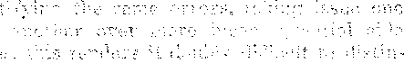
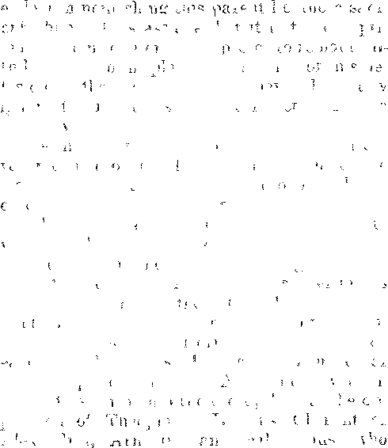

16a
167
171
UTTLE
i Mir xhc - <■
Labor anb Economics ffHB GeNTEEMBN OF TH8 IMMGRMIOS SERVICE
A Stingtns
cal—Domes'! OF CAPtTAMSil
Religion a:
JVhekb Chubchianity Got Its Ca
Purposeful Fabrications . . . . A Weak Imitation . . . . .
1 Incarnation,
Course
‘ Miscellaneous Musings ......
j Immortal “Souls” Handled Delicately
j Atonement. Obscured .......
Sunday and the Eucharist . . , . .
1 Reverence for the Clergy Emphasized
• Jealous Shepherds ........
; Individual Bible Study Adroitly Discouraf Misleading Interpretations of Prophecies Adoration and Worship of Women . .
Frekdom fob rar Peopi.es ......
Bibi® Questions and Answers ....
178
180
What the Government Does
Blessings Coming' . . .
Volaazra® IX fhiwldy^ M, Yos W©^wsglays Dseemfeer Ms 1027 N^mbes’
,.:• By 0. L. Rosenkranst Jr„
THE writer has before him a neat, compact little volume, soberly bound in black with gilt lettering and intriguingly illustrated with cuts of ancient sacred pictures. Somewhat whimsically it recalls to his fancy the black clerical habit and gold chain of oldtime parish clergymen who in Walpole’s days were obsequiously ready to dignify by saying grace the carousals of their patrons, fox-hunting English squires, but were required by inexorable custom to retire with the ladies before the “second bottle”.
The writer confesses to having acquired this treasure in a species of bibliophile enthusiasm without any very sanguine anticipation, of tangible profit from its perusal; and indeed a preliminary survey of the contents served rather to strengthen than to dispel this suspicion ; for such a muddle of antique superstition, pious sophistries and sacerdotal Mother Goose, tedious enough and provocative of yawning merely to glance over, seemed devoid of rational interest in a world confronted with such problems as radio-zoning the air and the application of “vita-glass” to egg production.
Distracted by the stream of honking traffic on the highway, the writer’s attention refused to focus itself on such superannuated lore. How strange that .anyone should ever have bothered his brains about it I In our day, the public yields a docile ear to the seductive appeals of “high-powered” salesmanship, until even the pidpit is its pupil,
Compared with the mechanical magic of these latter days, the tawdry miracles of the Apocryphal New Testament pale into insignificance. Science has harnessed the genii and made them 'drudge. We dismiss with a shrug the puerile folk-lore of our forefathers. We question whether the survival of these illegitimate scriptures can have served any end other than to gratify antiquarian curiosity concerning the dry-as-dust, calf-bound erudition of our ancestors, whose fund of patience must, have been considerable, or else their stock of reading matter strictly limited, to have found solace in such rubbish.
Good and useful wmrks, the old divines pronounced them, and such they may have seemed in cloistered quietude read under light which came filtered through stained-glass; but grotesquely irrelevant to the spirit of our noisy bustling times with their hedonistic outlook and their fetishistie attitude toward. science.
Nevertheless if merely to be an anachronism ■were the most damning article in our indictment of the books, this paper would not be written; for why should one busy himself to resuscitate forgotten, fallacies, just to point derisively at them ? But the reader, by degrees, is made sensible of a more sinister reaction on his spirits than mere boredom as he laboriously threads his way through, the tortuous maze of homilies, pious platitudes, false guesses, meaningless marvels and-misapplied quotations from the'inspired text. ■ .
The reflection obtrudes itself persistently that though these books are how Discredited, our ancestors rated'them authoritative, along with the canon, which they claim to amplify and serve as commentaries on and whose obscure passages they often purport to elucidate. Furthermore, since those works profess to have appeared at such an early date in church annals, even, during the apostolic generation, .how can we be positive that the doctrines herein enunciated demot properly constitute what the apostles taught?
Subversive Fallacies,. ■
HpHESE counterfeit scriptures openly testify to the orthodoxy of dogmas which scholars now deem imscriptural, via., inherent immoj**
16S , ■
tality, the trinity, inearnation, trahsubstantia-tion, hell, the immaculate conception, eta If these represent errors engrafted from paganism, why were they not refuted by the apostles! And how quickly the latter’s words and influence must have been effaced after their demise to suffer these fallacies to obtain such wide ere-‘deuce. .
Nay, insinuates the tempter, let us concede that in a sense these writings were impostures inasmuch as they owed their origin to over-zealous ecclesiastics, less scrupulous to record the exact sayings of their teachers than, we could wish, but perhaps not really departing from the spirit of the apostolic teachings, with which no doubt they were intimately familiar; which teachings their own writings were designed to be supplementary to, as detailed statements, where only outlines are afforded in the canon. Consequently, it does not follow that the Apocrypha are actually unconformable in cardinal articles of faith to what was generally believed in flie primitive church. ‘
I riving slyly inserted this douht, the demon has brought his victim to the brink ch slipping faith in the very elements of triaon, well-nigh, preovkod into grouping the ciPirc ‘feripturcs, two and false, in the same catewwy as archaic and vwiojwry eontoetore, wpwrtr and ursprov-gble with nc logical bearing or the problems of our modern electrically-driver. rye.
But we in ant beware of tmsly a.‘v-nnrpfion.s. Trulv, If (ri ri sti ani ty were d-yend W w yorim-.ics fur its validity, the line of eb'rnwo-vlon rw-tween fact and fiction might in A™ to trace, T ' ’ ' ' - * in
giiffh between the "vafino and i’w wulrlirn,. "......--- ....... .....■'
'fncAeTu seholnrly research has riw>ng.nt to light iinbopeachable evidence in the shape of old manuscripts which snridete even the Apoery-to be what thoir name indicates, irrespective .of their disagreement or presumed conformity with the canon; but proving likewise that they are not really in conformity with it, as the editor of th.® aforesaid black and gold compilation has pointed out in illuminating annotations.
Moreover, there is no evidence that any of flies® New Testament Apocryphal gospels, acts, epistles and apocalypses are older than the Fourth Century A. D., and of many the original MSS. are lost, and we possess only transcripts of the Middle Ages. We recall, in addition to this, that the Protestant clergy were fain eventually' in the interests of candor to exclude these books from the Bible, although the same were useful in reinforcing ecclesiastical pretentions.
So putting all these considerations together our enthusiasm, for these books revives; but it is negative in character, not evoked by their intrinsic merits, either as truth or clever forger-" ies, but by their value in exposing the vulpine policy of an apostate church, ambitious to consummate an adulterous union, of church and state and to persuade the laity of the divine ordinance thereof.
Purposeful Fabrications
TfiJY THE foregoing, we do not mean to imply XJ:? that Nicene orthodoxy was an outgrowth of the Apocryphal, teachings. The reverse is ths truth ; the apostolic doctrine.was corrupted first, and the spurious gospels and epistles fabricated afterwai’d to give -the vitiated doctrine the weight of authority.,
Briappoirted in their expectations of a eono'. i > r T fin ainbitious
elewry proeknnti the Hennanic irirgdom as ti-rpndy established under hierarchical auspices. Their program was to eoncfiiata tl.vear and
a r • * ,., , i ’ • t - 1 - by
to the ruling clasww Their- policy was to consolidate their g-Priuwl empire by wholesale conversions ef the Tinman, populace..
. The la tin
attached to their Idclatrou.s practices that it was no easy niatroe to lure them aws.y, Accordingiy the old gods were incorporated in driguri-d form as sannts and marlyrs. their idtialrms ■warship adapted to the chm-cli .ritual. In tins way the masses were reconciled to the new
And so subtly was this metamorphosis effected that agnostically-mindcd scholars, confuting the original with the adulterated, doctrine, have been led to infer that Christianity represents simply a variation of the solar myth, an astrological adaptation, of Judaism. But the monstrous alliance facilitated the ecclesiastical program ofi winning imperial patronage..
The surviving Apocryphal books (as well, we surmise, as those the titles of which alone have been transmitted to us, i. e., the “lost gospels” of Andrew, Bartholomew, Basilides, Scythianus, Titan, Thaddeus, Thomas and Valentinus, various “Acts of the Apostles” by Leucius, Lenti-tus, Leuthon, and others, the “Bevelati ons” of Cerinthus, Paul, Peter and Stephen; the Acts of Andrew’, the “Epistles” of Christ to Peter and Paul, etc.) all reflect the zeal of loyal partisans of ecclesiasticism to promote its plans for setting up a theocrasy1, a defilement of the sancfu-ar> with heathen abominations.
Nor docs it invalidate this supposition that many of these false scriptures antedate the controversy of Arius and Alexander! The church J1 ad been adulterously minded for some time prior to this; and priestly sycophants were alert to forge a Scriptural blessing to the projected illicit union.
In the Apocrypha an ingenious counterfeit is presented of the inspired writings; the apostolic style and diction is cleverly imitated in a way calculated to deceive the pious. There is a similar recourse to parables and enigmatical utterances, but the meaning is carefully made clear and not left for future truth seekers to unravel, line by line and precept by precept, here a little and there a little. The reader is never left to form his own conclusions, but instructed in the meaning as prescribed by orthodoxy.
Passages from both Old and New Testaments aie liberally intercalated between the text to leaven the whole with an odor of sanctity and plausibility; but these quotations are grossly misapplied with often explanatory words tacked on to the end to give a wrrong twist to the senses
Thus I Clement states that “God divided the eaith from the ■water, with which it is encompassed”, as if in divine corroboration of the contemporary hypothesis of a flat earth, encircled by the “river of ocean”. Similarly, it is gravely asserted that “even the smallest creatures live together in peace and concord with each other”, a manifest absurdity, contradicted by our daily experience and observation.
A Weak Imitation
“B/TUCH resort is had to unctuous prating of XVJL goodness, with pious exhortations toward humbleness, meekness, charity, and all the cardinal virtues, special emphasis being laid on reverence for one’s spiritual superiors and the need of cultivating submissiveness. Shallow platitudes and trite recommendations to holiness abound. Through all a sanctimonious twang is detectable.
The reader is sensible of something lacking; his spirit is not abashed by that intangible hid, den power and inscrutable wisdom that intern lines the inspired text. Mysteries are aplenty; but they are unconvincing, palpable subterfuges designed to impose on devout credulity and to exalt the sacerdotal office of interpreter. The reader is conscious of no obligation to scan the enigmatical utterances reverently and ponder over their meaning, but skips along in a spirit of levity as if he were reading a sub-division promoter’s advertisement.
No wonder if, as alleged, Catholic pastors used to interlard the services with ribald jokes interchanged with their parishioners, and that communicants repaired to the corner saloon after morning mass! It is reported that priests used to rebuke risibility by free use of the horsewhip. (Carleton, Traits and Stories of the Irish Peasantry.)
The Apocrypha, indeed, seem excellently adapted to bolster up a system of formalism and superstition whereby the goats are enabled to crowd into the sheepfold by acquiring the ovine “bleat”. In the “Shepherd of Hermas” sheer formalism is rebuked, the godly being reminded that the true fast is of the spirit; but the Shepherd is careful to add that formal observances are praiseworthy in their place as works of merit and supererogation.
*‘Trimtyn Repeatedly Endorsed
HOUGH Protestantism discarded the Apocrypha, its leaders were not vouchsafed enlightenment to abjure along with it the doctrinal errors sanctified therein. These errors, transparent enough in our day of critical research to bo candidly admitted and sifted out, one. Mould think, remain imbedded in the creeds and are stubbornly reiterated as sacred truths by the very same seminary graduates who as disciples of higher criticism virtually disavow the Bible itself, regarding the same as a strictly Inman compilation, no more under divine supervision than the Sig Veda or the Shakespearean dramas.
These same divinity students may be cognizant of the practical unanimity of heathen religions in endorsing a trinity of some sort, and that the triune concept was not implanted in the creed without a long and bitter controversy in the primitive church; but, for all that, they ding to it with pertinacious insistence as the very corner stone of their faith. And for tins they have not a shadow of Scriptural authority besides the three heavenly witnesses of 1 John 5:7, a proven interpolation absent from, all the Greek hlSS. executing one in Beilin, k>.ovn to have been transcribed from the printed B..blia Coiv jhtf eii -B
Neither is this a recent d’Neovery; for as far back as the times of our grandfaloeis' grandfathers Hr Trane Ntwion prove 1 the text to be absent from any Greek MSS. earlier than the Fifteenth Centuiy, or Latin MSS. hefoie the Ninth Century, ft is fiivt cited by Virgilius Tapseiisis, a Lat-n writer of no credri in the Fifteenth Century, and by him supposed, to have been forged.
It was held doubtful by Erasmus, Luther and other eminent leaders of the ’Reformation; and is not referred to by the early trinitariaus in their acrimonious controversies with the heretics. If it were authentic, it is reasonable to suppose they vould have seized on this text with avidity as one of their most clinching arguments.
Outside of the pagan pantheons of the Babylonians, Egyptians, Hittites, Phoenicians, etc., the only authority for the trinity antedating the three heavenly witnesses are certain texts in the Apocryphal books. These ie\t> are quite numerous and their endorsement specific: as, '‘There is one Jesus Christ . . . uho proceeded from one Father, and exists in one, and w returned to one.’*—Epistle of Toatms to the Maanesians 11:2.
Tg. Nag. V:4: “Study therefore to be conformed in the doctrine of oiw Lord and of his apostles: that vhatsoever ye do, ye may prosper both in imdy and in spirit, in faith and chanty, in the Son awl in the Father, and in the holy spirit: in fh» beginning and in the end.”
Gospel of the Birth of Mary VJI1I: 15: “And she brought foi th her first born son, as the holy evangelists have taught, even our Lord Jesus Christ, who with the Father, Son and Holy Ghost, lives and reigns to everlasting ages.”
Acts of Paul and Theda 1:18: “Blessed are they who keep their baptism pure: for they shall find peace with the Father, Son and Holy Ghost.”
Incarnation, of Course
HpHE preposterous doctrine of incarnation, an adjunct of trinitarianism, is often cited by agnostics as supposed irrefragable testimony to the conflict of Christianity with common sense. With pertinent sarcasm, they inquire whether the uiiivfise vras left to run itself while its supreme J lead absented himself from His throne to mmgle ireoqnrio among !Iis creatures in an obscure oi b in Hio realm. The reply to this criticism is that incarnation is not properly a Christian rancipt, but a heatlun one, common to Hindu, Greek and. Roman paganism, and mystically' typifying a phase of solar activity.
It is unwarranted by the Bible, and Sir Isaac Newton, sewJl le of its paradoxical nature, generations ago observed: “What the Latins have done to this text (1 John 5:7). the Greeks have done to that of St. Paul (1 Timothy 3 :16). For by changing; omikioii into theta, the abbreviation of theos, they’ now read, ‘Great is the mystery’ of godliness; God manifested in the fleCu’, whereas all the ancient versions, Jerome as well as the rest, read, 'Great is the mystery’ of godliness which was manifested in the flesh.’ ”
But this dogma passes unchallenged in tire Apocrypha. Witness: “There is one physician, both fleshly and spiritual, made and not made; God incarnate: true life and death: both of Mary and of God; first impossible, then possible, even Jesus Christ our Lord.”—Epistle of Ignatius to the Ephesians II: 7.
Oh, nhat a mystery of priestly gabble is this to befuddle devoutly’ credulous brains! First impo-rible. then possible! Unbidden memories float baric m us of oldfimo bar room lecturers and the profound inanities they uttered between hiccups, with such drunken gravity! From Vs inception, the pulpit has ever prescribed noi.se as the unfailing panacea fox spiritual anremia.
Tree life and death! In a choice bit of 1’)-mamst fiction, Urn pallor s comment on. the suppliant's avowal that i-Le preferred death to life is, “That is a beautiful sentiment, my child.” Beautiful ? Are the shroud and mouldering boiv s more beautiful than the green-gold of the grass, spangled with a yellow glory’ of dandelions and streaked with the long shadows of the tree trunks, or than the dimpled bosom, of the Jake sparkling like diamonds in the morning sun ?
What message streams down to us from the star-strewn grandeur of the dizzy7 cosmic vault, ■where Polaris, our anchor, drags in a circle? Always the tonsured-cult disparage the sublime handiwork of the Almighty as vanity, bidding us fix our hopes on jeweled harps and golden pavements. Howbeit, themselves are strangely reluctant to bid this good green earth adieu!
The Notorious “Star”
IN IGNATIUS to the Magnesians IV: 11-13, we are confronted with the novel theory that mankind’s redemption was primarily brought about by the Star of Bethlehem, or at least the text conveys that thought. This star, it is related, so eclipsed in brightness the other heavenly bodies as to attract world-wide attention, stimulating speculation as to its import, the outcome of these cogitations being mental manumission from the bonds of “magic, ignoi'ance, and sin”, vdiereby “the old kingdom vTas abolished, God himself appearing in the form of a man for the renewal of eternal life”.
How that anything which is inherently eternal should require renewing surpasses ordinary every-day intelligence to comprehend. Apparently, the author’s ideas are prepossessed by certain aspects of the Solar myth where the deity periodically dies and renews itself at the end of a cycle, and he is transferring to the Star of Bethlehem some of the attributes of Spica in the constellation Virgo. This cyclical concept colors Ig. Mag. J 1:5, which refers to “Jesus Christ, who was the Father before all ages, and appeared in the end to us”.
A Jesuit writer, after extolling the Magi as g -eater personages than Csesar, Columous, or Om Captain Lawrence of the Chswapeake, -.rrtlws the Virgin Mary J-i n ystwal jihistra-t -a as th? “bean'if d star that rose in Jacob”. So hs-AC +he B maiusri cv°r sbiwn to subnid’-wi c. s-.e Son i •) the mother, as if Mary were the Gm; of ;< cob, and mat though avnri' beside 11.00 ewfLe, her syMt simultaneously mode in the star. Palpably he -dent-ties Spica w Virgo a. the “Wse Men’s’ bea -on.
The Gospel op Nicodemus readapts the hoary me th of Tsfhar and Thanwuz (and its va nations in other lands as the myths of Cybele and Vttis, Isis and Horus, Venus and Adonis, e,c.) into a form more suitable for reconciling heathen converts to diocesan episcopacy.
“St. Jerome” vouched for the story of Christ’s 'descent into hell and this incredible tradition seems to have been foisted onto the creed at an early date, the general belief being that Adam, Noah and the ancient worthies, together with all the righteous dead had been confined in hell until Christ descended thence to transport them to the celestial paradise.
Miscellaneous Musings
IN NICOD. XV: 9 an altercation ensues between Satan and Beelzebub, prince of the infernal regions, the former recommending the permanent incarceration of the expected visitor and the latter protesting its impossibility. Beelzebub explains that the wresting of Lazarus from his custody had enlightened him as to Christ’s omnipotence: “And I know now that he is the Almighty God who could perform such things, who is mighty in his dominion and mighty in his human nature, who is the Savior of mankind.”
Previously (Nicod. XIV: 8) those functions are ascribed to the Son which Jesus declared unequivocally to be kept in the Father's own power, when all the saints are made to prostrate themselves before the Savior’s feet, exclaiming, “Thou art come, O ^Redeemer of the world, and hast actually accomplished all things, v hich thou didst foretell by the law and the holy prophets.”
The crucified thief, translated to heaven, relates to Adam and the saints how he addressed Jesus at Calvary: “And I believed him to be the Creator of all things, and the Almighty King; and I prayed to him, sawing, Loi d, remember me, when thou co nest in to thy kingdom.” (Nmod. XX : 9) The author evidently puts Ins trurf in the misplaced fommo, or its unciem equivalent,
Even the skeptical Pontius Pilate concludes that Ie had m cis rffieial capgery condemned and executed the ebu ud Tint Cause, being mode to testify: so E rhat
Jems e.born ne cii?1’twd is M=u Crrivi u o Sou ot Led and true and AJnl-hi’' Cod. J men.”™ Nicrnl. XXI I: 20. ' ”
la Acts of Paul and Theda V'lv: C r’'lv'niu prays, “O Lo-d God of heaven m I taiLi, J( sus Christ, thou Son of the Most limb, grant that her daughter, FMcoriiJa, may live ior ever.” Barnabas III: I asserts that the lord (Jesus) had shortened the times and the days so that His beloved, the saints, might hasten His coming into His inheritance.
The thought involves a paradox of preordained adventitiousness, as if the immutable plans were reconsidered to anticipate a prearranged date to enhance saintly prestige by allowing them to contribute more effectually toward the second advent. But this is to misconstrue the original, therein the words "unless those days should be shortened” imply not an alteration of predetermined plans, but indicate the overwhelming nature of a catastrophe, such ®s v ould extinguish all life if long continued.
Immortal “Souls” Handled Delicately
SOME well meaning Utopians (exponents perhaps of the “good old world” theory, so good they are quite satisfied with its indefinite perpetuation under the present kindly auspices) have prophesmd an eventual undying of all leligious systems through the elimination of non essential dogmas and the intention of chose common to piactmalb meiy crcul. The hope of inunortaE dj, they qw, wdl rmmsh a umveisal point of n ru<uiint m a base- o Im Lag av the )3i u *" k1 ueiu me-.
B-ea -ve' urrhia’ *ty l<?oils us \ » Ml neat' -
■’•n i-uwl i Wh 1 lion a-s o’- maf1 ot the
\ i v c - i (t oL Ch e tidbitv
T u (. on not L' d i i h ifiiM diu-im tl r gmiCKcim, ft o 2ipm,nphrJ W'to ar« somewhat ei’ium^p M m them f thtade to yard it; howmer, the reality oi the soul ie vouched for in the second epistle of Clement to the Corinthians V: 1 3: "The Lord himself being asked by a certain person, When the kingdom should come? answered, When . . . that which is without [shall be] as that which is within; He means this: he calls the soul that which is within, and the body that which is without. As therefore the body appears, so let the soul appear by its good works.”
From which we deduce the kingdom is presumed to conesnond to a plane of spuitual development attained separately by each individual Christian. The kingdom is conceived as the remp of Christ in the heart, a far onte ww ofi modern churehiainty also
Clement, a disciple of Peter, subsequently beer'me bishop of .Rome He is bsted as the fom rh pope’m some oj the catalogues and as filth m others 'He was highly esteemed by Cie inn Altxoi tour ic, Ft sehms and other jath-eis of the dunt , bcmg i*mJ uu(;\siy «•" m topost ibc nici’, an “anwue”, am ‘■'Lnoet cQ apis M. Bv . i, iik. <■(> - i em pu’ ey
o. i-.i '-i In s m i - c ii i h
r 1 1 m m t to’’ j. r’ n - & u d L, br u 1L ( 1 J l £ l z Z I. I <(
c a ” h >. tin v c i 3‘ £' ’t H l e J C _i >
f c < d "gun
i z. 3. "erjs ?.e
'V ml. lti it Lt in Io ’ 'to tS th t he p’ae s mwp ahfie< aipim"] oi d lmc Em-Ike. or C viwjiit, J i..vex?tmg fjria “esteemed st a gieat blessing’ th t they v e “happiiv d scoyoied for the mnrave and '■on' i« mation ot our laith a» vwllasourehani-yT > Jr B
a partiality the pulpit has alv s shown lor hndi sounding, empty, meaning!A5s phrases! !t must have required truly a superabundance of either faith or gullibility to swallow these pom-gjosities without nausea.
As for charity, Clement makes large inroads ©n our stock; for the most charitable assumption that his unswerving loyalty to Catholicism 'tempted him into "using the word of God deceitfully", rather than private vanity or ambition.
Like all the Niemans, Clement wholly misap-gjreheiids the destiny of the new creation in relation to the general redemptive plan, and its Histinction therefrom. He shows this where he says, "We must therefore keep our flesh as the temple of God. For in like manner as ye were ©ailed in the flesh, ye shall also come to judgment in the flesh. Our one Lord Jesus Christ, who has saved us, being first a spirit, was made flesh and so saved us; even so we also in the flesh shall receive the reward."
If the translation be accurate this would argue that Christ’s reward for His fidelity was stripes mid martyrdom; hence correspondingly the saints are to look on their persecution while in the flesh, not as a badge of service, but as the reword itself I
The lack of insight of the church fathers in regard to tb° resurreclion and the judgment day is stril’togly exemplified in Ignatius to the Saiyra&ans 1:7-9, vrhere we are remindod that our Id aster’s sufferings were a reality and not illusion "as some heretics claim”. The latter are ’dortour cod, brii ,g warned that "as they believe so shall it happen unto them; when being divested of the flesh, they shall become mere spirits ["incorporeal dvmcues” in the original]. But I know that even after his *< eshirreetion, he [Jesus] was 5n the flesh; and I believe that he is still so.”
Are we to mfer that he .believed that ihv Master retained TIis terrestrial body even after His ascension? What a blundering transportation of Bible teaching is here effected where the saints are promised a fleshly hereafter, and the jmregenerate sinners threatened after their demise with a mere spirit existence 1 Followers of Dr. Conan Doyle might profitably insert this passage in their apologies of the nightmare Science.
Staeiwi Obscwed
INDEED the vital significance of the atonement, which is made so plain, in the words of T&ul “As all in Adam die; so in Christ shall all be made alive,” seems to have escaped the Apo®-ryphal writers. In Barnabas IV: 10 some groping attempt at explanation is given, that it was essential for the Redeemer to “appear in the flesh that he might make good the promises given to our fathers, and preparing himself a new people, might demonstrate to them whilst he was ■upon earth, that after the resurrection he might judge the earth.” In short, the subordinate features are emphasized; and the main purpose, the ransoming of Adam’s seed from original sin, is lost sight of.
Churehianity has always taught that mankind at large is already under judgment as individuals during the incumbency of the god of thi® world: consequently for* the overwhelming majority of people the judgment day must decree condemnation. They are predestined to "hell fire” through no fault of their own, and to them the blood of Christ must be mockery!
‘This narrow viewq so signally misrepresentative of the divine attribute of mercy, is reflected in Barnabas IV: 15, “IVherefore the Son of God came in the flesh for this cause, that he might fill up the measure of their iniquities who have persecuted the prophets unto death.” Yet Jesus gave His posi five assurance that He came not to condemn the world, but. that it might be savedi Wherever possible, sectarian bigotry lias sedulously striven to substitute bogeys in lieu of divine mercy.
Vain Imagirfngt JVighlis Endersed
rpHOSE modern philosophers, including the A noted author of the Outlive of Histoiy, who indulge in gloomy forebodings of an ultimately freezing planet, under & cooling sun, must have had their ancient prototypes; for we read: “'Then he dearly manifested himself to be the Son of God. For had he not come in the flesh, how should mon have been able to look upon him that they might be saved? Seeing if they beheld only the sun, which was the work of his hands, and stall hereafter cease to be [Italics mine—B.], they are not able steadfastly to look against it.” "—Barnabas IV: 13,14.
Again he is trying to account for sunlight by 'disregarding the sun. Of course his argument is valid up to a certain point. In a sens® the Savior would in His spirit body remain invisibl® t@ fleshly humanity; but the witness of His works during His fleshly career was only in®^ ■ ’dentabto the key purpose, the ransom, which Barnabas seems studiously to ignore.
And, alas for Mr. Wells and his efforts to frighten us about what will happen to our greatgrandchildren’s remote descendants, the more advanced thinkers among scientific men have recently scrapped the whole La Place hypothesis and invented a planetesimal theory to take its place, which makes no provision for the solar system gradually running down and being forgotten by the Winder-up.
The Apocryphal writers, destitute of any comprehensive appreciation of the divine plan, correspondingly failed to discern the ultimate destiny of Israel in relation thereto. Hence they revert to speculative and fictitious exegeses of the promises to Abraham, intended with a literal fulfilment, but construed by them as pertaining to individual growth in Christian character; as Barnabas V: 8-14, where the divine invitation extended through Moses to enter into a land flowing with milk and honey is interpreted as a call to the Christian to be transformed from the fleshly to the spiritual nature.
The simile is used (Barnabas V: 9) that “man is the earth which suffers; forasmuch as out of the earth Adam was formed.” Pursuing this forced and arbitrary symbology he explains: “Wherefore ye see how we are again formed anew; as also he speaks by another prophet: Behold, saith the Lord, I will take from them . . . their hearts of stone, and I will put into them hearts of flesh. Because he was about to be made manifest in the flesh and to dwell in us.” —Barnabas V: 16,17.
Undeniably it is a beautiful thought that our hearts should be transformed by the indwelling of Christ in them; but that is not the sense of the original, which foretells the Jewish change of heart after, as a nation, they learn to recognise their Messiah in Jesus. In a wider application it relates to human enfranchisement from the rule of selfishness.
In view of the dulnoss of perception evinced in so much of the foregoing, it is curious to not® the endorsement thereof by such eminent divines as Archbishop Wake, Vossius, Dupius, Whiston, Dodwell, and Doctors S. Clark, Bernard, Mill and Cane, who are unanimous in pronouncing Barnabas a genuine epistle. Probably their estimate of its genuineness is the measure of their own misconception of the divine plan
I which Bambas is so out of harmony with.
SUNDAY is sanctified by long-established custom as the Christian sabbath. Without questioning the propriety of this custom, the fact remains that the Scriptures are silent in the matter, whereas the Apocryphal books present the customary arguments in favor of Sunday observance; as Barnabas VIII: 9,10, where Judaizing tendencies within the congregation meet with the caution that the seventh day is not acceptable to the Lord, who “resting from all things . . . shall begin the eighth day, that is* the beginning of the other world. For which cause w’e observe the eighth day with gladness, in which Jesus rose from the dead; and having manifested himself to his disciples, ascended to heaven.”
In Ignatius to the Magnesians III: 1-3 it is alleged that the holy prophets of the pre-Christian era did not conform to the imperfect Jewish law, but lived under the dispensation of Christ, “and for this cause were they persecuted. . . . Wherefore . . . they who were brought up under these ancient laws came nevertheless to the newness of hope, no longer observing sabbaths, but keeping the Lord’s day.” What is her® postulated exhibits a curious similarity to the Koran’s assumption that Adam, Seth, Noah and Jesus were good Mohammedans!
Where fjie true meaning of the atonement had become almost obliterated it is not surprising to find the false doctrine of trahsubstantiation in bold relief. A modern casuist attempts to justify this cardinal tenet of Catholicism in th@ miracle of the loaves and fishes, the only num. ele, hejaretends, that is recorded in all. the four gospels. The multiplication of the loaves, he ex>« plains, “prepares us to believe that under the form of bread he [Christ] would multiply his real presence, so as to feed millions of Catholics with his own body and blood.”
We are not advised of the tariff for masses in those first centuries of Episcopal ascendancy, though we find this hideous error already strongly rooted then. In Ignatius to the Philadelphians 1:10, communicants are cautioned, “Wherefore let it be your endeavor to partake all of the sam@ holy eueharist.”
In Ignatius to the Smyrnseans II: 16 the congregation are admonished to beware of heretics^ who “abstain from the eueharist and from the public offices [formal prayers and ritual]; because they confess not the eucharist t® be the flesh, of our Savior Jesus Christ” Again: “Let the eucharist be looked upon as well established,, which is either offered by-the bishop, or by him to whom the bishop has given his consent.”-™ Smyrn. Ill; 3.
llevenncs fer the Clergy Emphasized
CCLESIASTICISM always set great store on formal observance and solemn mummeries calculated to overawe and mystify the laity and to impress them profoundly with a conviction that the priest was indispensible. In the Catholic legend, Jesus himself in the gui.se of an acolyte assists a priest to serve mass I
The necessity for a regularly graduated hierarchy to serve as the divine interpreters is repugnant to the apostolic teachings. In the new creation all members become Levites and ordained ministers of God. It remained for an ambitious clergy to erect the most stupendous and complex ecclesiastical system ever dominant ©ver the human spirit, and to devise impostures ©f the inspired text in ostensible corroboration of its requisiteness.
The program of churehianity is divulged in 1 'Clement XXX: 1-3, where it is narrated how the apostles, “having received their command « . . went abroad, publishing that the kingdom ©f God is at hand.” From the context, it is apparent -that they intended to convey that the kingdom, was to be established during the current generation under the auspices of & church yet in the flesh, through wholesale conversion of the heathen, which remains after many centuries the ideal of churehianity. “And thus preaching through countries and cities, they appointed the first fruits of their conversion to he bishops and ministers over such as should afterward believe, having first proved them by the spirit.”—1 Clement XXX: 4.
According to the views of these churchmen., Messianic kingdom could be consistently set ®p in this present evil world, inasmuch as Christ feeing himself the First Cause is omnipresent, ’“Where Jesus Christ is, there is the Catholic .Church”.—Ig. Smyrn. Ill: 4.
If the validity of this claim is granted it follows as a natural sequence that “it is not lawful without the bishop, neither to baptize, nor to ©elebrate the holy communion,”. (Ig. Smyrn. HI? 5) “It is a good thing to have a du© regard both to God and to the bishop: he that honors the bishop, shall be honored by God. But he that does anything without his knowledge [Italics mine-R.], ministers unto the devil/’—Ig. Smym» HI: 7.
Here we detect, unless our discernment is at fault, the germ of auricular confession, the thrice-holy Inquisition, sermons in a dead tongue, and all the other auxiliaries of medieval mental enslavement to the Vatican; for even as Christ was held to be omnipresent, so likewise must His body, the church, participate in this quality. Consequently, it became flagrant sin to conceal anything from the clergy.
The belief that the Messianic kingdom was already set up under omnipotent Christ eon-noted church regnancy over all nations and tongues. This spiritual empire was closely modelled on the imperial structure to which its officials and territorial divisions corresponded. At first subservient to Caesar, as hierarchical power became .centralized in archbishops, patriarchs and metropolitans its arrogancy increased until in 606 A. D. the Emperor Phocas officially recognized the Pope as supreme head of the church.
Thereafter the Man of Sin augmented his powers and pretensions, claiming an authority even superior to Caesar’s to hold the keys of heaven and hell, to bring suppliant monarchs barefoot to kneel at his feet. There were no limits to his pride and ambition until even the titles appropriate only to divinity were arrogated to him.
Some hint of this future exaltation is afforded in Ignatius to the Ephesians 1:12, where the diocesan magnates are likened to Christ in authority and their title to universal spiritual dominion explained. “For even. Jesus Christ, our inseparable life, is sent by the will of the Father; as the bishops, appointed to the utmost bounds of the earth, are by the will of Jesus Christ.” This outwardly innocuous text might be construed as a warrant to punish as rebels any heretical or heathen, nations who disputed the rule of diocesan episcopacy.
Hierarchical solidarity is urged in Ignat. Magnes. II: 4, 5,8, whiqh outlines the scheme of government: “I exhort you that you study to d® all things in divine concord, your bishops pre® siding in the place of God, your .presbyters in the place of the council of the apostles, and your
'deacons, most 'dear to me, being entrusted with the ministry of Jesus Christ. ... As therefore the Lord did nothing without the Father, being united to him; neither by himself or yet by the apostles; so neither do ye anything without your bishop and presbyters.” By all means, let your superiors do your thinking, otherwise you will not make docile church members, and not accept Papal infallibility in years to come!
The solicitude of its founders was to maintain and stabilize ecclesiastical integrity, so naturally they deprecated individual self-assertion. "Tn • like manner let us reverence the deacons as Jesus Christ, and the bishop as the Father; and the presbyters as the Sanhedrin of God and college of the apostles. ’Without these, there is no church.” (Ignat Trallians 1:8,9) Here the clergy are already blasphemously demanding ' the same homage due to the Creator and His Christ, and declaring salvation to be available only through their own instrumentality.
""Wherefore it will become you to run together, according to the will of your bishop, as also ye do. For your famous presbytery worthy of God, is fitted as exactly to the bishop as the strings are to the harp.” (Ignat Ephesians 1:13,14) Nor was strictly sacred music always played bn these harps: more often the minstrel attuned them to the "lay of the golden goose”, until merchandising in indulgences, dispensations, absolutions, masses, etc., yielded incalculable profits, finally precipitating the Reformation.
SINCE ecclesiasticism is rooted in ignorance and superstition, its perfect fruition is cowed and quiescent masses, making a virtue of their own poverty to lavish treasures on convent and cathedral. Hence, implicit obedience is stressed as a cardinal virtue with the laity; as Ignat. Magnesians IV: 5, “Be subject to your bishop and to one another [keep one another loyal by dutiful reminders], as Jesus Christ to the Father, according to the flesh, and the apostles both to Christ and to the Father, and to the Holy Ghost; that so ye may be united both in body and in spirit”
Apparently the thought embodies church sovereignty, both spiritual and temporal, over mind and body. "For whereas ye are subject to your bishop as to Jesus Christ . . . it is therefore necessary that as ye do, so without your bishop, ye should 'do nothing; also be ye object to your presbyters as to the apostles «fl Jesus Christ our hop®” (Ignat Traffians 6) Do nothing without consulting his revere®®^, because he is properly a better judge ©f private affairs than you are yourself I
"Whoever does not act in harmony with the church is proud and already condemned himseH, For it is written, God resisteth the proud. L®t us take heed therefor® that we do not. set ourselves against the bishop, that we may be subject to God” (Ignat Ephesians 11:3) “Fos whomsoever the master of the house sends to be over his own household, we ought in like mm. ner to receive him, as we would do him that serf him. It is therefore evident that we ought to look upon the bisJiop even as we would do upon the Lord himself J’ [Italics mine—R.] (Ignat, Ephes. II; 4) “It will therefore behoove you in all sincerity to obey your bishop.”—-Ignat. Mag-nesians 1:7.
Already Antichrist was giving utterance to great things and blasphemies, showing himseH in the temple that he was God. No wonder that Protestant prelates were slow to discard such, “good and useful” allies as these books, which, educated the laity into a fitting deference toward their clergy! Ignat. Ephes. 11:4 paves the way for Papal pretensions to infallibility.
ATURALLY, heresy comes in for strong reprobation by these champions of Nieen®
orthodoxy. As in Ignat. Trallians II: 1, “I exhort you . . . that ye use none but Christian nourishment; abstaining from pasture which is of another kind. I mean heresy.” "For they that are heretics confound together the doctrine oS Jesus Christ, with their own poison; whilst they seem worthy of belief. As men give a deadly potion mixed with sweet wine; which he who drinks of does with treacherous pleasure sweetly drink in his own death.” (Ignat. Trail. II: 2,3)^ “He that is within the altar is pure; but he tha^ is without, that is, that does anything without the bishop, the presbyters, and the deacons, is not pure in his conscience.”—Ignat. Trallians 11:5. '
The church claimed to be conscience-keeper for the public, discountenancing to the extent ofi inquisitorial repressions private liberty ofl thought. There were seven minor sins, seven deadly sins, and seven sins that cried to heaven Mor vengeance; also there was a graduated seal® ©f fines for their remission.
Eventually, there were indulgence hawkers with -blanks made out for every conceivable ©rime, ready to he filled in with the purchaser’s aaame. If one yearned to relax oneself with a little playful homicide, the prudent course was to get absolved in advance. Business was brisk until Luther began asking awkward questions, Fuch. as, “If the pope releases souls from purgatory for money, why not for charity’s sake?”
Much follows in the same strain, as Ignatius to the Philadelphians 1:8, “For as many as are ©f God and of Jesus Christ, are also with their bishop.” The insubordinate are of the Devil’s communion. “Be not deceived, brethren; if anyone follows him that makes a schism in the church, he shall not inherit the kingdom of God. "<f anyone walks after any other opinion, he agrees not with the kingdom of Christ.”-—Ibid 1:9. '
Cyprian, the great promoter of Catholicism, had written that whoever separated himself £rom the universal church was in the position of those outside the ark during the flood of Noah. “But the Lord forgives all that repent, if they return to the unity of God, and to the council of the bishop” (Ibid 11:17) Eepentance is vain, however, unless the specified penances are performed, or commuted by a cash equivalent!
“It is & shame, my beloved, yea, a very great ’shame and unworthy of your Christian profession, to hear that the most firm and ancient church of the Corinthians should, by one or two persons, be Jed into sedition against their priests.” (1 Clement XX.: 24) The Theodosian Code eommicsioned the successors of the persecuted apostles to themselves turn persecutors. The beast was ready to tear and trample whoever insulted his haughty rider. Once accused ©f sedition against Divas (?®sar, the Christian professors employ the same term to incriminate their detractors.
“Let no mail deceive himself; if a man. be not Mthin the altar he is deprived of the bread of God. For if the prayers of one or two be.of such force, as we are told, how much more poweiTul Bhall be that of t he bi shop and the whole church ?” —Ignat. Ephes. II: 2.
| The implication is that the church is omnis-®ient and omnipotent, having supernatural supervision qver the thoughts and private welfare of the laity. The mark of the beast was to be on everyone’s forehead and in his hand. To offend the clergy seriously was to tempt Providence । but whoever stood in their good graces was assured of prosperity, both temporal and spiritual®
Theories of “Fathers?’ Recommended
WE INFER that Ignatius was received with a ceitain amount of skepticism by his contemporaries, from the obligation he seems to feel himself placed under to defend his statements ; some of which were evidently challenged as being wtieanonical. Thus, in Ignatius to the Philadelphians II: 19-2.1.., he says: “Nevertheless, I exhort you that you do nothing out of strife, but according to the instruction of Christ. Because I have heard of some who say: 'Unless I find it in the originals [the canon], I will not believe it to be written in the Gospel. And when I said, It is 'written [in the originals] : they an-swer.ed [referred me to] what lay before them in their own corrupted copies.”
He cunningly pretends that Iris own misquotations are the pure doctrine, and that the unadulterated versions of his critics are misleading. He endeavors to ward off criticism by pious generalities, slyly insinuating that his own. special inspiration is superior even to that of the four gospels I “But to me Jesus Christ is instead of all the incorrupied monuments of the world,” concluding, with smug sophistry: “All there Core together are good if ye- believe with charity.” That is, if you listen in. a friendly, tolerant spirit, the prophets, the gospels and his own words are oi equal merit and sanctity.
The Papists have always stressed the equal authority of the fathers of the cbm ch with the Scriptures on which their works served as commentaries. Protest nits are told that they err in relying on private interpretation which their lack of scholarsoip unfits them for. In the above we have an example of how liable these same church fathers were to impudently foist their own ideas onto the public, as of equal authority with the apostolic writings.
Sndmdmil iBiMe Study Adroitly Dismayed
IT SEEMS astonishing that in our day of analytic research, when so much light has been thrown, on the Scriptures by new-found manuscripts and contributory evident® @f varims® kinds which serve to confute the divine origin of ithe Augustinian Creed, exposing it to be a med-’ley of truth and pagan errors, that otherwise : intelligent and educated church people should cling so tenaciously to these doctrines as the bed-rock foundation of their faith.
Are tfot the same critical expositions of this fallacy as available to themselves as to others? Indeed, yes; but unread by the majority, who are supremely indifferent as to the critical merits of a doctrine. This predilection is notoriously to follow a leader with a resounding bray and to give vent to their emotions in concert with their fellows.
Emotion has contagious qualities, whether yielded to in the theatre or in the pew. Moreover, with church 'people, their religion is so inextricably involved with social life that the average member prefers a tacit concession of what he hears from the pulpit rather than social ostracism. *
There is a certain comfort' and reassurance in public worship (whatever it is directed to I), and the average church member is reluctant to alienate his friends and prejudice his business interests by open antagonism to doctrines which very frequently his reason finds inadmissable.
Conscious of his own incapacity to interpret trio Scriptures, the average church member relies on his pastors, who have been trained as specialists in this field, and whose scholarship entitles them, as he supposes, to a hearing. Unfortunately, the ulterior motives of the shepherds are too often, not to feed their flocks, but to conspire against them with the wolves.
Neither are the uncritical congregations cognizant of the fact that in all ages the priest cult has been partial to discovering strange and mysterious applications in the sacred text, symbology being stretched beyond its proper sphere by Jewish rabbi and Christian teacher alike.
MiBlesu&tg Snlerpretatiom &f Pwphecws
E FIND this tendency exemplified in the Apocrypha, where, as though to prevent
the clear understanding of the -prophecies before 'due to be understood, the Devil is permitted to suggest false interpretations. Thus, Barnabas IV: 10 attempts to elucidate the meaning of Daniel concerning the ten kings, the beast, and the little horn.
Having not the remotest suspicion that this pxcpb.ecy contains an indictment of the churches’ apostasy, the author conceals his own perplexity under an air of profundity, referring ambiguously to the “ten kings that reign in the heart” and exhorting the pious not to be like those that “add sin to sin”, but to remember that the “consummation of sin is come”, as illustrated by the little horn which plucks up the first three horns.
He assumes that the prophecy contains instruction on living the Christian life, and is a hint to believers to be cautious how they allow to pass unrefuted the supposition of the unconverted world that “their covenant is ours also; for they have forever lost that which Moses received”.
Moses, he reminds them, broke the tablets of the law because the people lapsed into idolatry. The blood of Christ was shed for the elect, to the exclusion of unbelievers. Indubitably he meant to imply that mankind in the aggregate were doomed to a hell of unending torment. He continues, admonishing his hearers to give heed to the last times, which expression he presumes to indicate the closing days of life for the individual during his earthly probation. “For all the times past of our life and our faith will profit us nothing, unless we continue to hate what is evil, and to withstand future temptations.”
The fourth beast is depicted as symbolizing the ultimate triumph of sin in. the heart of the straying Christian, and his eternal perdition. The ten horns denote the ten cardinal sins, which, are absorbed by the little horn, the unpardonable sin. In Barnabas IV: 10. the expounder of this text expatiates still further on this theme, piously inveighing against the danger of private interpretation. “Wherefore, consider the works of the evil way'’, drawing an argument from the text of Isaiah, “Woe unto them that are ’wise in their own eyes”, which he amplifies into, And who sitting, “fall asleep in. our sins; and the wicked one, getting the dominion over us, stirs us up, and shuts us out of the kingdom of God.”
In relation to Abraham and his seed, the Apocryphal writer searches after the most abstruse and mystical meanings. He cannot believe but that the Jews are perpetually shut out from divine favor. Barnabas VIII: 11-13 proceeds; “Abraham first brought in circumcision, circum.-eising 318 men. of his house. Mark first the 18 and next the 300. For the numerical letters of 10 and 8 are I H'. And these denote Jesus. And because the cross was that by which we are to find grace, therefore he adds, 300; the note of which is T (the figure of the cross). Wherefore by two letters he signifieth Jesus and by the third his cross/’
Among the Bomans of Barnabas’ day, each letter of the alphabet had a numerical significance. However, the Hebiw prophets were unfamiliar, we suspect, with either the G reek letters or their numerical character. The “Tau symbol” is now recognized by archaeologists as pertaining to Moloch, figuring his destructive attributes. The Apocryphal writer, by identifying the Cro$§ with the Tan symbol, would tacitly identify Moloch with Christ.
More About “Chamctsr’1
AJRNABAS IX is chiefly a discussion, of the commands to the Israelites pertaining to clean and unclean beasts. The author severely taxes his ingenuity to descry a spiritual meaning in. these dietary regulations. .He assumes them to relate to the formation of "Christian character”, interpreting the prohibition of sowmeat to "not join thyself to persons who are like swine”, lest you be defiled.
To abstain from the flesh of the eagle and the crow is to avoid keeping company "with such kind of men” who do not earn their own. livelihood "but injuriously ravish away the things of others”. Barnabas has committed an. inadvertence here, exposing to censure many notable pillars of the churches, let alone the clergy themselves I
The lamprey and the cuttle-fish must be eschewed because they typify "accursed ones” who wallow in the mire of contumacy, instead of rising to the sacerdotal bait like the more freely swimming suckers. The hyena is tabooed because it “every year changes its kind and is sometimes male and sometimes female”.
The weasel represents those “’impure women who do wickedness with their mouths”. Maybe we should include in this category those lady evangelists who attract a large following, gain welcome publicity and amass quantities of filthy lucre by preaching hell fire and the Devil’s first lie.
What a nightmare of superstition the world labored under so long as the monasteries were the sole repositories of learning, and education was confined to the priests 1 They used to wall-up skeletons or “grims” in the masonry of church vaults to deter good Catholies from breaking in to steal tii® golden pyx and silver candlesticks.
The ehwsh plaesd it® official denial, on ghosts, but was not averse to making use of the popular dread of them to protect its own treasures! The Mosaic restriction of diet to those animals which “elave the hoof” is accounted for as figuratively specifying the Christian, since the “righteous liveth in the present world; but his expectation is fixed upon the other”.
Quite charmed with his own sagacity, the author exclaims, “See, brethren, how admirably Moses commanded these things!” (Barnabas IX: 19) But who, we wonder, were the antitypical Israelites who were to eat nothing but the flesh of Christians? Perhaps it was the clergy who were to devour their substance, depriving them of the “bread, of life”.
Adoration and Worship ®f Women
N AMBITIOUS clergy, apostatizing to win imperial recognition, were fain to grant concessions to the pagan prejudices of their prospective converts. Because the celebration of Sunday and Christmas as holy days ante-ceded the Christian era, agnostics have deducted Christianity to represent a re-alignment of the solar myth into partial conformity with Judaism.
In connection therewith they point to Mariol-atry as a disguisement of the world-old worship of Gaea, the earth mother, elsewhere variously denominated Ishtar, Ashtaroth, Isis, or Aphrodite. Among the Hittites and Cappadocians she was known as Derketo (Cybele) and Ma. Some archaeologists identify her with the pseudo-mythical queen, Semiramis. Tn the corrupt communities of pre-Hellenic Crete, she was the powerful Snake Goddess in whose honor the bull rings flourished. In the West Asiatic cities of Hattushash and Karkhemish, her temples were served by throngs of Galli or nniltilated priests and by man-hating armed priestesses, the Amazons, whose ruthless faces still glare at us from the sculptures.
The favorite symbol of Cybele was the dove, subsequently transferred to Venus, and eventually to the Madonna. Originally the patroness of fecundity, another of her symbols was the palm. Small images, fashioned as vulva, were worn by women to avert barrenness, giving rise to the wearing of amulets to ward off the “evil eye”. The modem counterpart of those appear to he the scapulars of Our Lady of Carmel, those “old-fashioned brown scapulars”, which the chaplains pretend soldiers begged for so piteously on Flanders fields, protesting against substitution of the less efficacious scapular medals.
In the course of centuries, "Our Heavenly Mamma” (as St. Gabriel affectionately termed her) has graduated from procuress to queen of sterility. However, the dogma of the perpetual virginity, now vehemently affirmed as canonical, was advocated with less confidence by the early controversialists, requiring fuller substantiation, than the Scriptures supplied; to remetly which oversight were fabricated “The Protevange-lion”, or “Birth of Christ”, and the “Gospel of the Birth of Mary”. The former was accredited to Matthew; the latter to James the Less.
These books are chiefly interesting as disclosing how rapidly heathen notions had multiplied within the church by the times of St. Jerome, who included the “Birth of Mary” in his translation. The Collyridians referred to this
Freedom for the Peoples
HOW Judge Rutherford’s great lecture Freedom for the Peoples affected two promi
nent Brooklyn business men is interestingly brought out in the two letters which follow. The truth is gradually spreading and finding lodgment in honest hearts in every walk of life.
. October 31, 1927
Judge Eutherford,
International Bible Students Association, Brooklyn, New York.
Dear Sir:
I loaned my copy of Freedom for fte Peoples to a friend of mine. He returned it in this morning’s mail with the attached letter, which I thought might be of interest to you.
His sentiments are the same as mine regarding your little booklet; and I used to be a regular attendant of gospel in corroboration of their teaching that Anna likewise conceived of the holy ghost, Mary; in consequence being exempted from original sin.
In our day. the idolatrous “adoration of the Virgin” continues to be an integral factor in Roman Catholic worship. Mary is rapturously acclaimed as “Queen of heaven and dispenser of its graces and blessings; Queen of the earth and custodian of hearts; Queen of the abyss and the terror of its wicked powers.”
Isis worship has got entangled with a good many of our customs and observances, one reminder being the zodiacal harvest sign of our almanacs. “God and the mother of God,” was the rallying cry of the riotous Alexandrines; and for centuries afterward her tinsel image sw~ pered a benediction on rapine and murder perpetrated within the very shadow of the cross. But psychiatrists identify her worship as the deified maternal principle.
(To be continued.),
—— 1/
Plymouth Church while Dr. Hillis was pastor there and heard the exact remarks which you have quoted.
Wishing you many more years in the good work you are carrying on and God’s richest blessings, I remain
Very truly vours, ‘ P. 0. Hebwig.
~~~~ October 29,1927
My dear Friend:
Enclosed please find booklet, which has been read twice with great interest.
Believe it to be absolutely true and correct and the finest piece of literature to be had, comparable with the holy Bible. ■>
Sony had not time to deliver it personally. Will see you when in your neighborhood.
Again thanking you, with best regards,
Yours sincerely,
' 0. M. Mra.
r
TTabey F. VZabd. Professor of Christian Ethics, Union Theological Seminary, New York City, has had the courage to issue the following stinging indictment of the capitalistic order:
The capitalist 4>rder has yet to face the conscience of feankiiid when the common intelligence has fully grasped fee significance of the fact that in every nation war profits fas exceeded those of peace, that the war occasioned the greatest increase of private fortunes ever known.
This fact fully reveals the moral nature of a system which makes profits even out of death and dishonor, which capitalizes the supreme tragedy of the world as it capitalizes its laughter and its joy, which proposes to draw interest forever on the millions of youth who now lie in the battlefields of Europe when they might be helping to make a new world.
' Along with this fact must be put another. Of the several forces which operated to defeat the hope of those who saw a new international order coming out of the war, not the least was the unconscious influence of the present financial system and the actual intrigues of its chief manipulators and beneficiaries. ... To these two necessities the interests of humanity were sacrificed.
When the plain people understand what lies behind the terms of the settlement in regard to China, when they comprehend the real meaning and causes of the policy of the Allies in Eastern Europe and the Near East, if they do not then, reject the capitalist order as ® corrupter and destroyer of humanity there is indeed bio all hope for the future.
The capitalist order is passing, not because of d^ects in its machinery, but because its power is giving out. . . . Another indication of its approaching demise is the progressive abandonment in the colleges of that system of political economy which deluded itself and the rest of us into believing that it was discovering inexorable and immutable economic law when, it v\as only analyzing and revealing the workings of a competitive capitalistic mode of production and distribution.
But the war has so shaken the authority of the capitalist order, and the peace has so revealed its moral bankruptcy even to its own. defenders, that not any support it may secure in the world of science or of religion can restore it to power.
Because the present economic order is quite generally admitted to be inadequate for both the spiritual and practical needs of human society, it does not follow that it is straightway, or ever, to be totally wiped out.
What economic order is to presently replace the capitalist system, does not yet appear. The matter is still in the stage of experimentation, with the probability that the result in form will be composite. But if the world is to move forward, its economic life must be organized around different ethical principles than those which dominate in the present system. No change of machinery will restore the world or satisfy the hopes and longings of humanity. .
At present the attitude of those who constitute the class of privilege toward any proposed change in the economic order does not give much hope of progress by accommodation rather than coercion. Before a Government Commission, one after another the men who derive large incomes from the mining royalties on thousands of acres of land in Great Britain, which was given their ancestors by long-dead kings, announced their determined opposition to any policy for the nationalization of mines.
In Canada, the Federal government ends a strike by sending federal troops to throw the leaders into prison. In the United States the socialists are denied meeting -places-and mobbed under the inciting influence of the misrepresentations of the press; and laws are being passed to prevent revolutionary propaganda in such terms that they can be and are administered to repress all organized discussion of fundamental political, social and economic change.
Nor is the situation more hopeful in the world at large. The peoples approach the problem of economic readjustment with the blood lust aroused iy the World War still boiling within them, still suffering from that madness which leads humanity to devour itself. Those who seek in Eastern and Central Europe to bring in a new order are'frankly trusting in the power of mailed might.
The governments of France and Great Britain speak fair words to the forces of labor, and meantime seek to mobilize the army against possible industrial revolution., A war to end war results in multiplied wars and threats of war. and occasions increased armaments in the democratic states.
At Paris the elder statesmen made decisions which unchanged will involve the world in two future struggles both greater than the war just finished. In giving to Japan territory and economic power in China, in violation, of all the principles professed by the leaders of democracy and even of the accepted law of nations, they have turned four hundred million people, the greatest single reservoir of human power on earth, toward militarism and "real-politik”. Unless there is enough democracy left in the earth to undo that shameful deed, a long and bitter retribution waits upon, the Western world.
Another decision at Paris invites the world-wide class war. It is reported by reputable correspondents that during April, 1913, the Soviet Government of Russia made overtures to the Allies, offering to cease fighting, to withdraw all its troops from every part of Russia not accepting its authority, to permit every part of Russia to decide by free franchise what kind of government it wanted and to abide by the decision, on condition that the Allies do likewise and resume economic relations with Russia;
The only answer to that offer which the world has heard has been the sending of further aid to the forces attacking the Russian Soviet Government and the sending of the Rumanian army into Hungary to attack the Soviet Government there. This decision is tantamount to a declaration of clkss war by the forces of capitalism, using the democratic state as its mouthpiece and instrument.
Are they blind like those who sat behind the doors of the palaces of Petrograd in absolute ignorance of the storm rising among the common people of Russia ? Does immediate economic self-interest, so blind them that they cannot see the consequences to the present structure of property and credit of trying to maintain, it by force of arms ? -
Yet because of the nature of that structure it dare not. trust its future to the. reason and justice of the common people. It therefore compels those of its chief priests and rulers who seek peace to put their trust in fole% ^rVJESTION: 'When a person comes into the *¥ world and dies, I suppose that would be wiled the first death. But Revelation 20: 6 speaks of a second death. "What is it?
’Answer.-'The second death means that a person dies the second time, from, which death there is no awakening; it means an entire cutting off, extinction of being. There are billions of indiviel-uals who have gone down to the tomb in the first death. But through Christ Jesus they will come forth again in the resurrection. In John 5: 28, 29 Jesus said: “Marvel not at this; for the hour is coming, in the which all that are in the graves shall hear his voice [the voice of Jesus], and shall come forth.” These billions of dead being awakened will come to a knowledge of the truth in the kingdom. If they walk obediently, they will be given everlasting life; but if they persist in a wicked course after being enlightened, they will die the second time. This is the second death. It means an entire cutting off for ever.
Now let us examine the scriptures in support of this. In. Ezekiel 18:20 we read, “The soul that sinneth it shall die.” In Psalm 37:10 we read, “Yet a little while, and the wicked shall not be; yea, thou shalt diligently consider his place, and it shall not be.” In Psa. 9:1.7 we read, “The wicked shall be turned [Hebrew word shub, to return or be turned back] into hell [the grave, shoot], and all the nations that forget God.” Of course to be turned back .into the grave the second time would be to die the second death. In the kingdom Christ Jesus is King and Prophet, or Teacher of the people. Any individual who will not hear and obey Christ Jesus will be cut off from all life. In Acts 3:23 we read, “And the soul that will not hear that prophet, shall destroyed from among the people.”
Question: In what sense may one enlightened by the truth even now as a Christian be in danger of and die the second death?
Answer: An individual who has been, enlightened with the truth, has received the favor of fellowship with Christ Jesus, and who then turns from the truth and persists in a wicked course knowingly even denying the blood of Jesus, will die the second death, although he goes down to the grave but once. The reason is this: After one makes a consecration to do God’s holy ■will, is covered by the merit of Jesus, and spirit begotten, such an individual is a new creature in Christ Jesus. He is released from the Adamic condemnation and death common to the world. He is a new creature in Christ Jesus. If after having been delivered from the Adamic death he now persists in a wicked course, such an. one will die the second death. In Hebrews 6:4-6 we read, “For it is impossible for those who were once enlightened, and have tasted of the heavenly gift, and were made partakers of the holy spirit, and have tasted of the good word of God, and the powers of the age to come, if they shall fall away, to renew them again unto repentance; seeing they crucify to themselves the Son of God afresh, and put him to an open, shame.”
The Christian should ever keep before himself the purpose of big existence. That purpose is to honor Jehovah. If the Christian does thi§ with his faculties and means, and is faithful to the end, there will be no danger of the second death. He will be a joyful Christian. He will have part in the first resurrection.
The Origin. ®f Christmas .By J. L. Bolling
qpiIE writer quotes the following very instnie-■A tive item concerning Christmas from Progress, issue of December 1926, Vol. X, No. 12, page 504:
Our far-away Germanic ancestors made merry when the sun, which, they revered as the source of all good, stayed his retreat before the forces of darkness and winter and began to retrace his course, dispelling the gloom of winter as he advanced; bringing in his train whispering winds from the south; singing birds, which had fled before the advancing cold; and nodding flowery to call the slumbering forces of life into action and to start again the beautiful panorama of the passing year. And as they made merry to welcome the returning sun. with feasting and dancing, a mythology still more ancient than the Nature worship of their times impelled them to bring in from the forests evergreen trees symbolical of the great tree Yggdrasill of Norse belief, whose branches supported the universe itself; and they hung lights on the trees to represent the stars upheld by the great tree of the universe; and they brought gifts to
express their appreciation of the many blessings which the sun was bringing them.
Then, in due time, the missionaries of a new faith came and, finding that this season of merry-making had become a part of the home life of the people, adopted it for the use of the Church and made it commemorative of the beautiful story of the Nativity when shepherds watched their flocks by night and wise men brought presents from the East.
History tells ns that Christmas was made a holiday by Pope Gregory in the Fourth. Century. As indicated in the last paragraph of the quotation, Catholic missionaries engrafted the pagan celebration referred to onto their own faith, and made it part and parcel of the Roman Catholic religion, in order to gain more influence and converts among the people.
And this reminds us of the statement of a noted cardinal who said that the Catholic system of worship "is the, very instrument and appendages of demonism sanctified by adoption into the Mother Church”. Notice how closely this celebration in "Christendom” parallels that of the pagans, in the tree, the lights, and the merrymaking.
Everybody gets the "spirit of the occasion” and is bent upon “having a good time” as they call it. The masses become intoxicated with worldliness and go pleasure mad. There is a make-believe of unselfishness expressed in the exchange of gifts and greetings; but for each gift sent another is expected in return.
The air is full of sermons, editorials and proclamations about Christ; and everybody affects to worship Christ; but as the Psalmist says of this class, “God is not in all their thoughts,” but they have removed their hearts far from Ilim, and are merely bowing in idolworship to the relic of a pagan custom.
Drunkenness, bacchanalian revelries and gen-ei al dissipation mark the course of “this present evil wTorld” on that occasion. It is a time when ehurchianity is whitewashed and the old “Mother” and her “harlot” daughters sally forth in their best garb.
The churches are filled with great hordes of ' people who have been deluded into thinking that they are Christians; and the “worship” is an abominable medley of Bible reading, comments, spiced with jokes and apt illustrations, laughter, boy scout marches, praise of the present order, sanctification of war, patriotic speeches, etc.
The whole thing is comparable to a circus; the “spirit” closely parallels that of a political convention; and the people leave, buoyed up in the false belief that they have done something grand in the way of worship of the meek and humble Nazareno. -
Even the Lord’s truly consecrated saints do not clearly comprehend the matter and are more or less influenced by the general hubbub of excitement. They realize that December 25th is not the birthday of our Lord; but the thought seems never to have ' occurred to them that everything must be “done decently and in order* and that if Jesus had instituted the celebration, of His birthday, He doubtless would have required that it be observed on the true date, instead of almost three months afterward.
We see now that Christ had nothing at all to do with the institution of “Christmas”; and the question arises, Shall we continue to observe a Roman Catholic holiday and bow the knee to Rome? Is not this a part of the “mark of th© beast” to be thrown on the junk pile along with other papal doctrines and practices? Should wq not merely quietly ignore it along with Lent, Good Friday, St. Patrick’s Day, and other Popish days and ceremonies? And have you noticed in this connection that the word “Christmas” is merely a contraction of the palpably Catholic term “CHRIST MASS”?
The question may arise, Who would oppose the non-observance of Christmas among the masses? The answer is that if a movement of any considerable magnitude in this direction should develop, it would meet with the opposition of all “Christendom”; both Catholics and Protestants would be a unit in opposing it; and the leaders thereof would be misrepresented and ostracized in every possible manner. It would be as unpopular as present truth itself, because a part of it.
Indeed, we have a historical precedent in the effort of the Puritans to ignore Christmas, recognizing it as an important part of the Boman system of worship in Wycliffe’s day; but they found their path strewn with many difficulties.
The fact that the world, the flesh, and th© Devil are in favor of its perpetuation and observance, is a final and conclusive argument against its celebration by those wflio are dedicated wholly to the service of Jehovah.
[Broadcast from Station WBBR,
New York, by Judge Rutherford.
J
Diplomacy is the DeviFs method of carrying ou€ his schemes amongst men. He is sagacious, adroit and wily. His attempt is to train the peoples of his greatest empire for his purposes. The Devil has fairly well succeeded so far as outward appearance goes but his days are numbered and the freedom of the people draws nigh!
The few who constitute the ruling class are haughty, harsh, arrogant and often oppressive. The common people, having been brought up in an atmosphere suggesting that Britain is the greatest empire on earth, have learned to look with arve upon their rulers and for centuries have willingly submitted to them and tried to be guided by them. The rulers have taken advantage of their condition and made the burdens of the common people grievous to be borne.
Today there are hundreds of thousands of people on the dole, which, means that they ar© without employment, have no opportunity to earn a livelihood and that the government doles out to them regularly each month a small pittance that prevents starvation. This condition has existed in a marked degree during the past ten years.
The living conditions of the British common people are far from ideal. The land is dotted with small villages, and from a distance these give the apiiearance of beauty and desirability as a place of residence. On closer observatx a it is seen that they furnish anything but a desirable place to live in peace and contentment. Large families live in small quarteis where necessarily the sanitary conditions and ventilation are inadequate. Their clothing and shoes must be o.t poor quality because they can afford none better and their daily food is even worse. Many families have meat but once each week and consider they are fortunate to have it that often. They roast their meat, and the juice that drons therefrom is thinned vrith ivater to ma'-e of it a greater quantity. These juices, oi’ gravy, are called "drippings”. During the week the people labor hard and their daily food consist of bread soaked with these drippings, and tea. Under such conditions it is impossible for them to have comfort and proper care and nourishment of the body.
Mingle with the people and you will see that the babes in arms are sweet and beautiful creatures, but mark the boys and girls in their teens
r’ IS difficult for the people of America, who have never visited Europe to appreciate the ©onditions under which the majority of the people of that land must live. In America the fields are broad, the air seems to be pure, there is a fair opportunity of earning the necessities of life and there is a degree of freedom. The conditions in America, however, are not ideal nor are they what they might be. There is a great Seal of discontent and distress in America and there is just cause for the existence of the same.
During the past two months I have visited such parts of Europe as that limited time would permit. 1 have been there many times and always try to take note of the conditions of the people. On the occasion of this visit to Europe it was iny privilege to address large assemblies of the people in Switzerland, Germany, Denmark, Scotland and. England. I took note that these audiences were composed chiefly of that class of people who by their honest and. laborious efforts produce the wealth of the land. Their opportunities for enjoying the fruits of their labors, however, are very small and altogether out of proportion to what they should be. The faces of the people plainly disclose that they are in mu'-li. distress.
The British are regarded as a superior people. They so regard themselves and are so regarded by many others. From babyhood they are taught in the home and in the schools that the Briti'-her is made of better clay than any other peon1 on earth. The result is that the youth a« * the grown-ups assume an attitude of supcc'e ity. The foundation of diplomacy is hud »i the crad a. It is even born and bred into tl c i .ople. Diplomacy permits one to put on an outward appcfti an co while at the same time a far different condition exists in the inner man.
When one gets doser to the people and learns of their conditions and habits it is easy to be seen that there is method in the training of ehiklren to believe that they are superior to others. Heretofore I have pointed out from the Scriptures and extraneous facts that the British Empire is the greatest on earth and that London is the seat of the beast, which means that it is the headquarters of the greatest empire the world has known. Beast is a symbolic term used to represent a world power imder the supervision of the invisible overlord Satan the Devil.
■!»«
and the older ones. Their faces are drawn and marked with sadness and distress and they soon become misshapen in countenance and in body.
A young man serves an apprenticeship and learns a trade and then may be fortunate enough to obtain a job. His wages are small and if he possesses courage sufficient to request higher ’ pay he’is told: “You should be glad that you are not on the dole. If you are not satisfied with your pay you can quit ” He knows that many others are waiting for his place and he know he must help support his family and the conditions therefore compel him to submit.
The laboring class has formed organizations for their self-protection and from time to time have gone on a strike. But these have always failed. This was never more clearly demonstrated than in the coal strike. The government there demonstrated its power to be greater than ever before and holding the whip hand compelled the laboring class to accept the terms offered them or starve. The clergy own large interests in. the coal mines and work against the laboring people.
Walking through the parks in the evening it is a common thing to see hundreds of couples of young men and young women sitting upon the grass or benches visiting with each other and often locked in each other’s embrace. At first one is disgusted with this public love-making. Looking into the matter further, however, and the conditions that surround the people one is moved with pity for them. These young people work in shops and factories during the long hours of the day. Their living quarters are small and crowded. They have no place to entertain each other at home. Conditions force them into the public parks in order that they may have some personal communication with each other. Their conduct in public cannot be classed as lewd but it must be embarrassing to youngpeople to be compelled to make love to each other in the public parks. But the question always arises, Who are the responsible ones! It does not seem with all the land there is upon the earth, and all the houses that are built or might reasonably be built, with all the mansions and estates that are inhabited by a few favored ones ‘ that the masses of the common people who love the air, the light, nourishing food and liberty, should not be permitted to enjoy some of these.
As a general rule the poor or common, people rear the largest families. These also have the least opportunity in this world to possess aa® enjoy the fruits of their labors. The prospect! set before them are in no wise encouraging. Th® father and mother see their children coming t® the age of maturity. They are fully aware dfi their own inability to save and lay up for their children. They know that naturally their children-in due time wquld like to marry and bring up families. They are also familiar with the hard conditions and the great difficulties that beset the pathway of the young in getting a start. The situation before them and for their children is dark and naturally the parents ar® anxious about them and are troubled and in distress.
What is said here about the British people applies to the common peoples of all Continental Europe. In some parts it is much worse thaa in the British Isles. No wonder then the peoples of Europe who love their families and d®>-» ' sire to see their children live under better ©on-ditions have a great desire to come to the broad lands of America. But the governing power® say: ‘You can come only under such conditions as we provide.” We know that this is not the Lord’s way because the Scriptures dedare that God made all men and all nations of one blood to dwell upon the earth, and in the sight of the Lord no one class of ruling people has a right to say that the men of one part of the earth shall not seek" another part where he or his can b® better cared for.
When you consider the great handicap under which the common peoples of Europe labor your heart bleeds for them. Great numbers are mis® ’ shapen and are diseased in body as a result of under-nourishment, and this leads them into vie®. They need help. They need relief from present conditions and they need freedom to enjoy the things which God has prepared for man.
What the Government Ooes
WHAT is being done to make the conditions of the people better? There is some outward demonstration of an effort in this behalfl and loud claims as to what is being dome; buf an honest and unbiased investigation of the facts shows that practically nothing is being or cm. be done by the powers that rule. The ruling claw ■ is made up of the rich, the professional politicians and professional clergymen. The time and efforts of the rich are taken up in making mom
money and in increasing their power and schem-' ing to keep the people in subjection. Therefore they see to it that the government is made stronger and that the army and navy are always a substantial basis and in condition for action.
The politicians are busy holding their own Sobs. They harangue the people about policies ©f improvements and betterment. They appropriate some of the people’s money to build & few hospitals and other public institutions. Their first interest, however, is to look after themselves and their allies. Neither the rich nor the politicians know how to better the condition of the people nor how to point them to God’s way of blessing.
The clergy pretend, to be preachers of the Word of God. They pose before the people as Christian leaders. They take the name of Christ and pretend to follow him. But they do not believe the Bible and they do not teach it and they do not want the people to know what the Bible teaches. They not only fail to teach the Word of God themselves but they do everything within their power io keep the people away from a proper understanding of the goodness of God. Therefore they join forces with the rich and the political element, and with pious and hypocritical faces claim that the present government is God’s kingdom on earth and that the people must patriotically support it and that there is ao other way to receive the blessings of life.
As an evidence that these men. do not believe the Bible although they pose as Christians, I quote the Daily Express published in London Monday, September 19, 1927. This paper publishes a statement issued by Bishop Gore and made by him at Grosvenor Chapel the day before its publication. This man’s name suggests blood or death, and his teaching is in. harmony therewith. Amongst other things he ridicules the Bible and quotes Tolstoy’s saying that rtthe Jews are masters of story-telling”. WVe are nourishing a vain hope if we suppose that the early chapters of Genesis or the stories abo^t Daniel and Enoch are ever going to be accepted as history. They have none of the characteristics of history ah real science has learned to detect them, and it is no good kicking against facts” . This is a sample of one of the distinguished ecclesiastical leaders.
I have in my possession a letter dictated by the Bishop of Birmingham to his secretary and fcaMmitted by his secretary to the secretary of
Golden Age
a class of Bible Students in England. I quote the letter in foil:
Bishop’s Croft—Harborne Birmingham, 12th July, 1927
The Bishop of Birmingham desires me to acknowledge your letter, and to say that he himself approaches the Bible from, the standpoint of modem scientific and literary knowledge. He regards the Bible as the basis of . the Christian faith and, naturally, values highly its inspiration; but he does not attach to it the infallibility which he believes the International Bible Students Association claims for it. Under these circumstances he feels that an. interview with your representative would, not lead to any useful result.
Youra faithfully,
N. M. V. Owen, Scsfy. To the Sec’y, I. B. S. A.
The Bible Students are trying to bring the truth to the people as set forth in God’s Word. The Bishop of Birmingham is a sample of thes® ecclesiastical so-called* leaders of organized “ Christianity that are using all their endeavors to keep the people in the dark.
This class of men was on the earth when Jesus was here and the same class of hypocrites has been on earth ever since and are still here. The crop is increasing. They make a great pretense of what they are doing and they always look after self. No wonder Jesus called them liars, hypocrites and sons of the Devil. These ecclesiastics form a part of the government of the great world power. They are more reprehensible and more responsible because it is their duty to know what God’s provision is for the people and to inform the people thereof. They not only fail to tell the people the truth but they connive • and scheme to keep the people from hearing the truth from any one because the truth exposes their hypocrisy and tends to the relief and liberty of mankind.
An instance is given here: In the British Empire radio broadcasting is exclusively under the control of the government. No citizen can even own and use a receiving set without paying a license therefor and having a permit from the government The government determines what the people shall hear and no one is permitted to broadcast anything without permission of th© government. The clergy see to it that nothing goes over the radio that would in any wise expose their hypocrisy and show the people’ the truth of God’s plan. I have spoken in Britain on many oceasfons. Some three months ago it
was announced in Glasgow, Scotland, that I would visit that city early in September. No hall in Britain in recent years has been adequate to hold the people that have come to hear a Bible lecture by me concerning God’s plan. In Scotland alone 26,000 owners of radio receiving sets, and who are therefore citizens and taxpayers to the government, signed a petition and presented it to the government asking that my lecture from St. Andrews Hall in Glasgow on September 11th be broadcast. This petition was contemptuously pushed aside and the request denied. Thousands of people came. St. Andrews Hall was quickly packed out. Two other nearby halls were linked up with wires and loud speakers; these were filled, while thousands more stood in the streets anxious for an opportunity to hear. This is one of many instances showing how the rich and the politicians and the clergy that hold the people by the throat deny them their petitions even to hear about God’s provision for their relief.
It was my privilege on that occasion to describe the blessings that God has promised in His established kingdom on earth. The question was propounded: “How many would like to see such a kingdom established amongst men?” Every one in the St. Andrews Hall immediately rose up except one, and that one was a preacher. Every one in the other halls, I am informed, likewise stood up, while the people in the street, many of whom were hearing through loud speakers on the outside of the hall, removed their hats as an evidence of their approval
Not for the Kingdom
IT IS apparent to any honest person who observes the conditions of mankind, the sufferings which, men must endure by reason of present conditions, the sufferings that they endure because of disease of body and mind, that they are in great need of help. God has permitted the human race to pass through some terrible experiences in order that they might learn that He is God. Now His time has come for them to know something of the loving provision He has made for them. And it seems almost certain that when the knowledge of the Lord fills the earth, in the manner which He has promised it shall fill it, the mass of mankind wi.ll rise up with joy and follow the Lord in the way that leads to life and happiness.
No power on earth is able to point out the way to life. Jehovah God alone is the great Lifegiver. He gave the first man life which he ralgM have enjoyed perpetually had he been obedient to God. Man’s disobedience brought sieknem, sorrow and death. The entire human race hw suffered by reason thereof. This has been the best method for them to learn that there is w power under heaven that can give them relirf except Jehovah.
In due time God sent His beloved Son, wh© by His death and resurreetion, provided the redemptive price for man. In the meantime G«| has been selecting the true followers of Christ to be associated with Him in His great work blessing mankind. Now the time has come in which God will have a strong witness given fea the earth to the nations and peoples that thagft may know that Jehovah is God, that there is w other name given under heaven for man’s salw-tion except the name of Jesus Christ, and that His blood has provided redemption and peace for all who accept it upon God’s terms. The time has come for the establishment of the kingdom aril the people must know about this in order that they may be in the proper condition of mind t@ accept its blessings.
What then are the blessings that the kingdom will provide for mankind?
Blessings Coming
MONG the first blessings for the eommoa people, war will be eliminated; because God promises that in His kingdom the people shaB. beat their swords into plowshares and their spears into instruments of farming. Nation shall not lift up sword against nation, nor shall they learn war any more. (Isaiah 2; 2-4) Thea fiie people will dwell together in peace.
The government will not be controlled by selfish men who attempt to keep the people in the darkness, but it is written by God’s prophet that the government will rest upon the shoulder iafi Christ Jesus, His beloved Son; that His nam,® shall be called 'Wonderful, Counsellor, the Mighty God, the Everlasting Life-Giver, the Prince of Peace, and the peace and blessings His government shall never end.
Through His prophet the Lortf God declares that His king shall rule in righteousness, an! that with righteousness He shall judge the p©os8 (Isaiah 32:1; 11:4,5) This will mean that the poor will have the same opportunity in the courts or councils as the rich. In fact, there will be no rich and no poor, because every maa wil
have an equal opportunity to 'do right and reserve the blessings of the Lord.
Among the first vtork of the kingdom the Lord will destroy all hypocrisy, falsehood and false teachings and do away with injustice and establish justice and righteousness instead. It is written by God’s prophet: “Judgment will I lay to the line, and righteousness to the plummet; and fte hail [truth] shall sweep away the refuge of Kes.”—Isaiah’28:17.
No false teachers then will be permitted to deceive the people. They will not he permitted to pose before mankind as teachers of Christianity and as- followers of Christ and at the game time deny the Bible, deny God’s provision for the salvation of man. These false doctrines are the result of the Devil’s influence, because ‘Jesus so stated in John 8:44. He again states in Revelation 20:1-3 that in God’s kingdom Sa-ten shall be restrained, that he and his agencies shall not be permitted to deceive the people. In gorroboration of this, God’s prophet Habakkuk (2:14) says that then the knowledge of tho glory of the Lord shall fill the whole earth as the waters fill the deep.
Furthermore, concerning that time God says through His prophet Jeremiah (31:34) that it shall not then be necessary for every man to teach his neighbor but all shall know the Lord from the least to the greatest of them.
The profiteers, aided and abetted by Ilie politicians while working behind the smoke screen produced by the preachers, have taken advantage" of the common people and robbed them and turned them into the shambles to starve. This will have to cease wider God’s righteous government, because it is declared by His prophet that then none shall hurt nor destroy another in all His holy kingdom.—Isaiah 11:9. *
When you go amongst the. common peoples ©f earth it requires but little observation to see that their labors are in vain, because they produce much and enjoy little. It will be different in the. righteous kingdom of the J ^oxd, because • it is written by God’s prophet Isaiah (65: 23) :• ^Thcy shall not labor in vain, nor bring forth, for trouble? for they are the seed of the blessed, of tho Lord, and their offspring with them.” Here is get forth a comforting and blessed hope for parents themselves and for their children; and what better could we do than to point out these wonderful truths to mankind?
In one town alone in Germany having a popu
lation. of less than 300,000 I was informed that there were more than 5,000 people that had no place where they could sleep in a house. This is an average condition in many parts of Europe. How will it be in God’s kingdom? What precious promise has He made to-comfort the distressed and relieve them from their sorrowful condition? I quote the words of His prophet in Isaiah 65:21, 22: "And they shall build houses, and inhabit them; and they shall plant vineyards, and eat the fruit ®f them. They shall not build, and another inhabit; they shall not plant, and another eat: for as the days of a tree are the days of my people, and mine elect shall long enjoy the work of their hands.”
Millions of the misguided poor of this earth, are induced to give up a goodly portion of the fruits of their labors to support an ecclesiastical system that not only keeps them in the dark but teaches them falsehoods that ‘bring to them distress. Call to mind ths poor working all week and feeding upon bread and drippings. Look at their misshapen bodies as a result of widernonr-ishment. Then compare these conditions with, those which God has promised shall come to the obedient ones of the Iranian race under His kingdom. Through. His prophet He says: "'And in this mountain [kingdom] shall the Lord of hosts make unto all people a feast of fat tiling s, a feast of wanes on the lees, of fat things full of marrow, of wines on the lees well refined. And he.will destroy in this mountain [kingdom] the face of the covering east over all people, and the vail that is spread over all nations.” (Isaiah 25: 6, 7) Here the promise is that not. only will the Lord provide adequate food for the people that will nourish and strengthen them in. body and mind hut He will destroy the falsehoods fhrt are cast over their faces and open their eyes to a clear understanding of the truth that they might rejoice that He is God. Then instead of suffering bodily pain and mental anguish and "laboring under distress they will enjoy peace and health and prosperity. One of the precious promises the Lord has made concerning this is recorded in Jeremiah 33:6: "Behold, I will bring it health and cure, and I will cure them, and will reveal unto them the abundance o| peace and truth.” Another one of his precious promises is found in Isaiah 33:24; "And the inhabitant shall not say, I am sick; the people that dwell therein shall be forgiven their iniquity.”
One of the great features of God’s kingdom which is now being established is described as the highway. This is symbolic language, of course. A highway represents a broad way leading to a goal; and the highway of life therefor® pictures God’s way of leading the people back to that which they desire. Concerning this through His prophet He says: "And an highway shall be there, and a way, and it shall be called, The way of holiness; the unclean shall not pass over it; but it shall be for those: the wayfaring men, though fools, shall not err therein.”-—’ Isaiah 35:8.
Those who desire to know |he truth and who obey the truth shall then live 'and be restored to perfect condition of body and mind and dwell on the earth for ever. Concerning that time Jesus says: “Verily, verily, I say unto you, If a man keep my saying, he shall never see death.”— John 8:51.
In America the clergy are exactly as they are in Europe. They do not believe the Bib© nor do they teach it. They pose as representatives of the Lord on earth, receive money at the hands of the people upon a pretext of instructing them in things pertaining to life and happiness as God has set forth. It is manifest, however, from what they teach that they are not moved by the spirit of the Lord, because they refuse to reach His Word. What is the reason for this? The answer is given in the Scriptures. Jesus answered it in John 12:31; the Apostle Paul answered it in 2 Corinthians 4:3,4 and both Jesus and Paul declared that Satan is the god of this world and that lie blinds the people in every possible way to keep them from knowing God’s provision for life. Satan is the god ■of this world. The clergy are a part of the world. Those constitute the leaders of so-called organized Christianity, which is linked with the other ruling factors of the world. Acting under the supervision of their invisible overlord they keep the people in the dark.
Jehovah’s time has come, however, for the people to know the truth and they are beginning to know it. Never was there a greater privilege granted to man than, to tell his fellow creatures about the blessings that God has in store for them. There is a way, and only one way, of complete relief. God’s' kingdom on earth is the way. His kingdom is at hand. Let the peoples take courage, look up, and lift up their heads because the time of deliverance draws nigh I
European history briefly refers to the little company of faithful Christians that lived at Leyden*, in the southern part of Holland. A goodly portion, of this company of Christians seeking a place where they might worship God in spirit and in. truth fled on the Mayflower and landed on. the bleak shores of New England. They came with the desire to represent the Lord and preach the Scriptures. Today the spirit of oppression in America is as strong as it was then in Holland or England. This oppression is carried on in a more subtle and 'hidden manner, however. The ecclesiastics of America would if possible prevent the peoples of this land from hearing the message of God’s kingdom. They have access to the largest radio connection on earth and yet absolutely fail and refuse to tell the people of relief that is coming through the kingdom of God.
As Bible Students we have no quarrel with, any person. We do deem it our God-given duty, however, to tell the people the truth, and to advise them, that Jehovah is God, that Christ, is King, and that the kingdom of" God will bring complete relief to mankind. This is the only reason or excuse that we persistently proclaim this message without the thought of taking up & collection. We are not doing it for pecuniary profit nor for membership but only desire to be witnesses to the Lord. That which man desires above everything else is life and the blessings that are incident thereto. God’s kingdom will bring all of those things desired. Because it is at hand it can now be confidently announced from the Scriptures that milions of people now living on the earth shall know the truth and obey it and thus doing shall never die. This -is eer’ tainly good news which all should joyfully desire to hear and should take delight in passing it on to their neighbors. -
“War not that the tyrants shall jnle tor ever, Or the priests of the Woody faith;
Whey stand on the brink vt ths mighty river Whose waves they hav® tainted with death.
“It te fed from the depths of a thousand dells j Arwtjpd them It foMDSTm^rages »nd swells; And their sworda and there ®eeptera I floating
Mte wrecks on the of eternity,®
[Broadcast from Station WBBB, New York, by M. I* Hartman.]
r? IS my privilege to tell you of some of the marvelous things that Jehovah has in store for the people.
Tn God’s Word the plan of salvation for the whole human race is outlined. This plan includes every human being that has come into- existence and those yet to be born. If what I have to say this morning brings comfort and encouragement then render your heartfelt thanks to‘ the great Creator, for it is His plan and not man's.
The text which forms the basis of this discussion is found in Matthew’s gospel, chapter 24, verse 14, and reads as follows: “'And this gospel of the kingdom shall be preached in all the world for a witness unto all nations: and then shall the end come.” The word “gospel” in this text means good news. The phrase “This gospel of the kingdom” implies a certain definite message to be preached at a stated time.
The text under consideration informs us that this gospel shall be preached as a witness unto all nations before the end comes. The “end” here referred to is the end of the wicked social order under Satan’s dominion. The word end is taken from the Greek'word telos and means to set out for a definite point or goal, or in other words, the point aimed at. The point aimed at is the setting up of a righteous government on the earth by the Lord for the people. This is the central theme of the Old and New Testaments.
Order is heaven’s first law. Jehovah’s plan algo in regard to man is orderly and is carried out exactly on time.
The purpose of this lecture is to prove by the Scriptures, supported by the physical facts, firstly, that the time has come for Jehovah to establish a government on the earth for the uplift and benefit of the people; and secondly, that this good news of the kingdom is now being preached to all the nations for a witness before the final destruction of the unrighteous order under the dominion of Satan that now exists on the earth. And we shall also be interested to know what blessings will come as the result of this kingdom.
Tfee Gospel of the Kingdom
OUTSIDE of the ransom sacrifice of Jesus
Christ, the most important teaching from Genesis to Bevelaticm is the kingdom. Every prophet and apostle wrote eoneerning it.
The Prophet Isaiah, foretells of the establishmeat of & government on earth which shall be on the shoulder of the Prince of Peace and which shall have no end. This is found in the 9th chapter of Isaiah. The Prince of Peace ig Christ the Lord. When He was on earth H® opened His ministry with the words, “The king-, dom of heaven is at hand.” It is called the kingdom of heaven because it proceeds from Jehovah God. The one whom He has anointed to b© King is His beloved Son.
The preaching of Jesus and the burden of all the parables which He uttered were concerning the kingdom. The question may here arise, Is not the kingdom of heaven, a spiritual tiling, something above and beyond the life and realm of man? I answer, No; because it is here on. the earth that man needs a righteous government dealing justice to all.
It is on the earth that man suffers from war, famines, disease, trouble, high taxes, high rents, lack of the necessities of life, from the heavy hand of oppressors, wicked politicians, conscienceless profiteers and hypocritical and lying preachers. It is here on earth that Jesus taught His disciples to pray for His kingdom to come, saying, “Thy kingdom come; thy will be done,” not in heaven, but “on earth as in heaven'’.
In support of this statement I use the text found in Daniel 2:44: “In the days of these kings shall the God of heaven set up a kingdom, which -shall never be destroyed: and the kingdom shall not be left to other people, but it shall break in pieces and consume all these kingdoms, and it shall stand for ever.”
This scripture, like many others, proves that the Lord’s government will be established on the earth. It also shows that there will be kings ruling over great nations when the time comes for the Lord to set up His kingdom.
Sigm the Son of Man
IF, AS mentioned at the outset of my discourse, the time has arrived for Jehovah to establish His government on the earth, then there should be clear Scriptural evidence to support that eon^ elusion; that evidence should also be supported by fulfilled prophecy which we call physical facts; these physical facts should fit the prohee^ and should be generally known to all.
Our contention is, that Christ Jesus who is invisibly present, took to Himself His powss and began His reign in the year 1914, and that then the kingdom began to function.
es®
The clergymen have long held that their chief business was to bring everyone into some church organization and thus to convert the world. They have held that by so doing they would set up God’s kingdom for Him. What do the Scriptures say?
In the 18th chapter of John’s gospel, record is made of the trial of Jesus before Pilate. Pilate had questioned Him-whether He was the King of the Jews. Jesus answered in these words, “My kingdom is not of this world: if my’ kingdom were of this world, then would my servants fight, that 1 should not be delivered to the Jews: but now is my kingdom not from hence.”
The word rivorid” in this text is from the Greek word Jms-mos, which means orderly arrangement, according to Dr. Strong's Concordance. Tn other w ords, the word “world” would mean the people organized into forms of government under the supervision of an overlord.
When Jehovah created the first human pair in the garden of Eden, He placed Lucifer over them as their overlord. After iniquity was found in his heart his name was changed to Satan and Devil. He overreached and misled our first parents and caused them to be disloyal to their Creator. Jehovah did not take away his appointment over them.
At the time of the first advent, four thousand years later, Satan was still ruling over the people and nations. Jehovah permitted him to rule for a wise purpose. In the wilderness Satan tempted Jesus and offered Him the kingdoms of this world, for they were, still under his authority. And so as Jesus stood before Pilate ‘ he could properly say, “My kingdom is not of this world.”
Jesus on another occasion said: “The prince ©f this world eometh and hath nothing in me,” showing that Satan was at that time the ruler of earth. Paul, having a clear understanding of the divine plan, many years after the death of Jesus said that the god of this world was Satan the Devil. See 2 Corinthians 4: 3,4.
All of these texts above cited prove that the Lord’s kingdom could not be set up during this present evil world. But this world must end and then the Lord’s kingdom could be set up; and this is why Jehovah will have the good news ©f the kingdom preached to the people before the final end comes. This preaching will prepare the hearts of those who hear the good news for that kingdom, even as John the Baptist prepared a people to accept the Messiah when H® came.
The End of the World '
TN THE 14th chapter of John, Jesus‘inform® J- His disciples of His return, which is know® as the second advent. The disciples no doubt had been told that, the kingdom would be estal> lished at the Lord’s second presence and at the end of the world. No doubt this informatioa caused many questions to arise in their minds. They would want to know7 w’hen He was coming again and what proofs there would be concerning the end of the world.
These very questions -were asked by the disciples. They are found in Matthew 24: 3, which I read: “And as lie sat uj5on the Mount of Olive® the disciples came unto him privately, saying8 Tell us, w'hen shall these things be? and what shall be the sign [proof] of thy coming, and of the end of the -world?” The w7ord “coming” is taken from the Greek 'word parousia, meaning presence.
If the time has come for the establishment of the Lord’s kingdom, as before stated, then these signs must have taken place in our days.
The whole of the 24th chapter of Matthew contains the answer to the question of the disciples, The events foretold have also found fulfilment in our day, particularly since 1914. For instancy Matthew7 24:7 is prophecy and is history now. I read, “For nation shall rise against nation and kingdom against kingdom; and there shall b@ famines and pestilences and earthquakes in divers places.”
Practically all of the so-called Christian nations were involved in that great World War. Never before has such a time of trouble bee® upon the earth. Since the war oppression has been on the increase in every country; and ig that not 'what Jesus refers to in the next verso,, where He says, “All these are the beginning of sorrow’s” ? ‘
The World War is connected with the fact that Christ takes His power and begins His reign as recorded in Revelation 11:17,18, which reads: “We give thee thanks, O Lord God Almighty, ... because thou hast taken to thee thy great power, and hast reigned. And the natioM
•were angry, and thy wrath is come.” The lease of Gentile rulership over the earth ended in the fall of 1914, according to the Scriptures. President Wilson, in a speech at one of the peace conferences, made this remarkable statement; “The old world has ended. We must build a new”
TjpOR over forty years students of the Bible •*-* had been telling the people that 1914 would mark the end of the Gentile times. In other words, that marked the end of Satan’s lease of power and the disintegration of the nations. Do > not the facts show that this is true ? I quota a passage from Volume 2, Studies in the Scriptures, which was written in 1889 and which is to the point: “The Bible evidence is clear and strong that the Times of tho Gentiles is a period of 2520 years, from 606 B. C. to and including 1914 A. D.”
_ Recognizing God’s lease of power to these worldly or Gentile powers, we know not only that they will fail and be overthrown and be succeeded by the kingdom of Christ when their “times” expire, but also that God will not take
* the dominion from them, to give it to His Anointed until that lease expires, “until the times of the Gentiles be fulfilled.”
Jesus, answering the disciples’ questions as to His presence and the end of the world, additionally gave us the parable of the fig tree in Matthew 24: 32, 33. The fig tree is a symbol of the Jewish nation. For proof of this see Luke 13:6. So then, according to the parable, when the fig tree, the Jewish nation, shows signs of favor from the Lord, we know that the kingdom is at hand.
The divine favor now returning to the Jew is that they are being regathered to the Holy Land, from which Jehovah drove them. Listen to the words of Jeremiah’s prophecy concerning the return of Israel to their home land: “Therefore behold, the days come, saith the Lord, that it shall no more be said, The Lord liveth that brought the children of Israel out of the land of Egypt; but, The Lord hveth that brought the -children of Israel from the land of the north, and from all the lands whither he had driven 'them: and I will bring them again unto their ““ Land that I gave unto their fathers.”—Jeremiah 16:14-16.
AS FAR back as 1878, there has been a gra'd-ual but certain return of the Jews to Palestine. They were outcasts in all the nations. Jehovah promised to bring them back This return of the Jew has finally culminated in what is known as the Zionist movement, which, ofl course, is known world wide. -
I quote one more scripture which is in. harmony with that of Jeremiah 16 above quoted and with the physical facts as we see them now fulfilling. Luke, chapter 21, verse 24: “And they [the Jewish people] shall fall by the edge of the sword, and shall be led away captive into all nations: and Jerusalem [meaning the Jewish nation] shall be trodden down of the Gentiles? until the times of the Gentiles be fulfilled.”
Listen to what the writer of the Studies in the. Scriptures says concerning the return of the Jews to Palestine in fulfilment of prophecy, on page 92 of the second volume. “The world is witness to the fact that Israel’s punishment under the dominion of the Gentiles has been continuous since B. C. 606, that it still continues, and that there is no reason to expect their national reorganization sooner than A. D. 1914, the limit of their 'seven times’—2520 years. But as this long period of their national chastisement draws near its close, we can. see marked indications that the barren fig tree is about to put forth, showing that the winter time of evil is closing, and the Millennial summer approaching, which will fully restore them to their promised inheritance and national independence. The fact that there are now great preparations and expectations relative to the return of Israel to their own land is of itself strong circumstantial evidence corroborative of this Scripture teaching.”
Time will not permit us to further consider the return of Israel to Palestine as an evidence of the establishment of God’s kingdom. But, ifi the time has arrived, then is it not reasonable that Jehovah would inform the people concerning this most wonderful event! I answer that M is not only reasonable but that the Lord’s Word commands that this good news of the kingdom shall be preached to the people and nations. 1 quote this command from Matthew 24:14: “And this gospel of the kingdom shall be preached ifi all the world for a witness unto all nations: and then shall the end come.”
Good News Widely Proclaimed t
HDHIS good news of the kingdom has been J- heralded far and wide within the last few years. This message of the kingdom now penetrates through the walls of stone by means of radio. The Lord is using a class of people who are fully devoted to Him and His cause. This company has been gathered out of both Catholic and Protestant systems. The International Bible Students Association have given free lectures for the past fifty years. During this periodof time they have placed in the hands of the people over forty million volumes of literature containing the good news of the kingdom. Thousands of tons of free literature have been distributed among the people in all the nations.
During the past two years they have printed over 75 million free lectures which were given to the people in America as well as in foreign countries. The Scriptures inform us that not all who hear the message will receive it, but many who do love righteousness will pass through the time of trouble that is just ahead, in vzhieh Satan’s empire will fall, and these will be of the Millions now living who will never die.
It is under the kingdom arrangement that the people will be restored to health, life, peace and happiness. •
'Isny of the miracles performed by Jesus at His first advent were samples of what He will do during His reign on earth. For instance on several occasions He brought the dead back to life. During His thousand-year reign He will rule until, all enemies are put under His feet, the last enemy being death. For proof of this see 1 Corinthians 15:25,26. With death destroyed it will mean that the people will no longer become ill and die. It will mean that those who have been dead will be released from death and they will live and not die.
Is that not what Jesus meant when He said: “Marvel not at this: for the hout is coming, in the which all that are in the graves shall hear his voice, and shall come forth”? And is not this the same thought found in the prophets? Hosea (13:14) informs us that God ■will ransom mankind from, the power of the grave and redeem them from death. “O death, I will be thy plagues; 0 grave, I will be thy destruction.”
What the Kingdom Will Bring
WITH the passing of death, disease, sorrow, pain and suffering will pass away also. The people wnll be restored to perfect manhood and womanhood. There will be no more halt, lame or blind. The lame man shall leap as a hart; the eyes that at one time were dark shall see the beauties of God’s wonderful creation. Mothers, fathers, brothers and sisters bowed down with grief from the death of their loved ones will receive them back from the tomb. All tears will be wiped from off all faces and with joy and singing they will look up to the great Jehovah God, as their greatest Benefactor and Friend.
In (he twenty-first chapter of Revelation we have a poetical description of the holy city, which is God’s kingdom, coming down from heaven. I quote: “And I John sa.v the holy city, new Jerusalem, coming down from God out of heaven, prepared as a In ids adorn0 J for her husband. And I heard a great voice out of heaven, saying, Behold, the taberneele of God is with men, and he will dwell with them, and they shall be his people, and God himself shall be with them, and be their God. And God shall wipe away aD tears from their eyes; and there shall he no more death, neither sorrow, nor crying, neither shall there be any more pain: for the former things are passed away. And he that sat upon the throne, said, Behold, I make all things new. And he said unto me, Write; for these words are true and faithful.” This prophecy, my dear radio audience, will be fulfilled in our day.
The Gentlemen off the Immigration Service
CONCERNING the gentlemen of the Immigration Service Commerce and Finance says with some touch of asperity:
“It is probably true that if the dominant influence in the administration of the immigration Bervice were the principles, even the maimers, that govern the conduct of courteous men and women of decent traditions and associations, there might be an occasional immigrant admitted who was not admissible under the law. This hardly seems such a terrible risk. Certainly'its partial elimination is not worth the price w@ pay in the maintenance of a system and method® unworthy of a decent people.”
[A Juvenile Bible story radiocast from Station WORD, Chicago, by C. D. Nicholson.]
him the piece which he had cut from his garment while he was in the cave. Seeing the goodness ofj David’s heart, Saul repented of his wicked intentions and wept and prayed that the Lord would reward David for not taking his life, Saul and his men then returned home and for a time turned their attention to other matters.
However, it was only a few months until h® again took an army of 3,000 men and went to ~seek David that he might kill him. David learned of Saul’s determination to find him and set out himself to find Saul and his army. When he found them it was night, so David waited until they were all fast asleep and then together with, one of his servants, stole into the midst of the camp of King Saul, where the king lay sleeping with his spear and cruse of water near his pillow. David’s servant wanted to take Saul’s life but David replied, “Destroy him not: for who can stretch forth his hand against the Lord’s anointed, and be guiltless?” But they took Saul’s spear and cruse of water and went back to a high mountain overlooking the eamp.
In the morning after sunrise, David called to Saul and to Abner, Saul’s bodyguard, and told them how the Lord had delivered the king into his hands but that he had done Saul no harm. In proof lie showed the spear and cruse of water. Again King Saul confessed to David that he had played the fool and had sinned against him and promised to seek no more to do him harm. Saul and his men then returned home but David took his men over into the land of the Philistines and remained there until King Saul was slain in battle, more than a year later.
After the period of mourning for King Saul, David was anointed at Hebron as king over Judah, but the remaining tribes of Israel refused to make him king for many years. On several occasions David suffered reproach, le-buke and false accusation from different sow ces without even protesting. It is true, he had the pov. er to punish all offenders against his dignity or office, but he never used it unless his loyalty and faithfulness to Jehovah were in question. It is no wonder then that David was always victorious in battle. It is no wonder that he was called a man after God’s own heart. It is no wonder that the people loved him and that God loved him and is to raise him up and honor him in the age which is to come!
IN OUR last lesson we learned that the Lord had chosen David to be Israel’s king a number of years previous to the time he became the actual ruler. His anointing by Samuel took place about ten or fifteen years before that event. It was still necessary for him to be anointed before the people but it was never the intention that they should have two kings reigning at the same time. Therefore, it was necessary that David wait until Saul no longer reigned. .
Most people, had they been in Daviji’s place, would have concluded that inasmuch as Jehovah had chosen him as Israel’s next king, he should proceed at once to dispose of Saul by having him imprisoned, hanged or murdered in some way. However, David took a different view of the matter. His thought was that King Saul had been chosen and anointed by the Lord and that until the Lord disposed of the matter, he would not take upon himself the responsibility of putting Saul out of the way and thus committing a sin against the king and also the Lord, who had chosen him.
After Saul learned that David was much admired by the people he became jealous of him and watched his opportunity to either kill David himself or to have someone else do it. In spite of the fact that David was always kind and considerate of King Saul it became necessary for David to flee for his life.
David had a number of friends who were associated with King Saul and among them was Saul’s own son, Jonathan. Jonathan was apparently about the same age as David and when he saw the courage and faith manifested by David at the time he slew the giant, he became David’s closest and dearest friend. The friendship between the two boys grew more and more imtil it was said of them that their* souls were knit together as one.
On one occasion, David and bis men were hiding in a eave and King Saul, who was then searching for “him, came into the mouth of the cave and lay down to sleep. David’s soldiers saw the king and wanted to kill him but David would not yield. However, he cut off a large strip of the lung’s robe and after the king had awakened and gone on some distance, David called to him saying that certain of his men had falsely said, "Behold, David seeketh thy hurt.” But as proof that this was not true he showed
(Study Twenty-nine)
236. This is a little 'difficult for us to understand just now; but when, we get a little olders w® shall b® able to see the way in -which the Lord makes it possible for one to share Hi® glorious nature and be with Him on His throne of everlasting power.
What is ® Church?
237. Almost any one will tell you that' a ehureh is a building in which to worship God. The wicked teachers have told the people, for hundreds of years, that the only place to ••worship our heavenly Father is in a church. This is the name they give to certain buildings like very fancy schoolhouses, where they teach folks their great lies, such as the trinity and the hell stories.
238. These teachers decided among themSelves that this building called a church should always he made in a certain form, with a tower at one end, and a bell in the tower, to call the people together when it was time to tell some more lies.
239. These wicked men then told everyone who would listen, that it was right to preach, only in a church; and that those who tried to tell the people about the Word of God in houses, ©r in little meetings in the woods or fields, were wicked men, and should be killed.
240. So for a long time these bad teachers had everything their own. way, and taught their wicked lies about God from a kind of raised box ©ailed a pulpit, which they set up in their church buildings.
241. And this is what made their lies so very, very wicked indeed: They called their fancy building the house of God, and even pretended to pray to the heavenly Father in. there, but at the same time they told things about God and Jesus that were not true; and instead of causing the people to love God, and feel friendly and ©lose to Him, they made folks afraid of even the name of the great Jehovah, which is the most wonderful name in the universe J
242. These teachers are still busily building new church buildings, and are more and more forgetting God, and leaving Him out Of their sermons or teachings. They have taken up ths ideas of other imperfect men, and mixed them with parts of God’s Word in a terrible jumble, and then said that God told them all this I
243. How this makes us wish foff the long* promised kingdom of God, when -w© se® how nmoeent people are being taught lies about their great Creator, the kind and loving heavenly Father!
244. Now, really, if we look in God’s Word, the Bible, we can. see plainly what a church actually is. Properly speaking, it is the church, not a church.
245. We do not have to go into a fine building,, all decorated with fancy woods and stones and carpeted with soft velvet, in order for God to listen to our praises of Him. When we meet to study His Word, we do not have to sit and listen to the words of someone else who tells us that God has appointed him, to teach us. God does not do that.
(Questions on Study Twenly-mneJ
236. Can we understand at present how it is possM® for the Lord to share His glorious nature, His throws and His power with, these our friends?
237, What would most people tell us a church, is? I® it true that God can be worshiped only in. certain. bwM-ings? Who was it told that fib?
238. Is there anything in the Bible that says that s church must always be built in a certain, form, with ®. tower at one end and a bell in the tower?
239. Is there anything in the Bible that says it i® right to preach the Lord’s Word only in a church building? Can truth be preached everywhere?
240. Is there anything in the Bible that says that all preaching must be done from a pulpit? What kind of thing is a pulpit anyway?
241. Is there anything in the Bible that says that God will specially hear the prayers that are made ia church buildings ? Is it right to lie about God ?
242. Does God want those to .preach about Him who do not know Him and only partially believe in. Him and in His Word? "
243. How does it make you feel when you know that innocent people are being taught lies about our great Creator and our kind heavenly Father?
244. If we wish to find out what the church is where should we look? Is there more than one tore church! Tell the names of the churches you know.
245. Is it necessary to worship God in a fine bwWingl Must it be carpeted? I® it even, necessary, to has# somebody that can speak fluently?
Reports from
BRITAIN UINADA AUSTRALIA ARGENTINA ARMENIA AUSTRIA BRAZIL BRITISH GUIANA CZECHOSLOVAKIA. DENMARK ESTHONIA FINLAND
FRANCE and BELGIUM GERMANX HOLLAND BUNGkW INDIA ITALY JAMAICA
JAPAN
JUGOSLAVIA KOREA LATVIA LITHUANIA POLAND PORTUGAL ROUMANIA SOUTH AFRICA, SPAIN SWEDEN SWITZERLAND TRINIDAD
The Tear Boole reports the progress of the work of the International Bible Students Association during 1927. A full report is given of all branches of activity in the United States and foreign lands.
The Year Book is a daily textbook for Christians. A text for each day of the year with appropriate comments- fills the need for early morning 'devotion. The book contains 320 pages, fibwid in green linen cloth and gold stamped.
50c a copy postpaid,
ifV'W I1D/"YXT Tlease send the Yeafr Boole.
LJrWlN Enclosed find 50e in payment.
Address .. . . . .. . .. .... <.
b...............................——---------- t
INTERNATIONAL BIBLE STUDENTS ASSOCIATION
A mixture of the vornhip of God and idols.